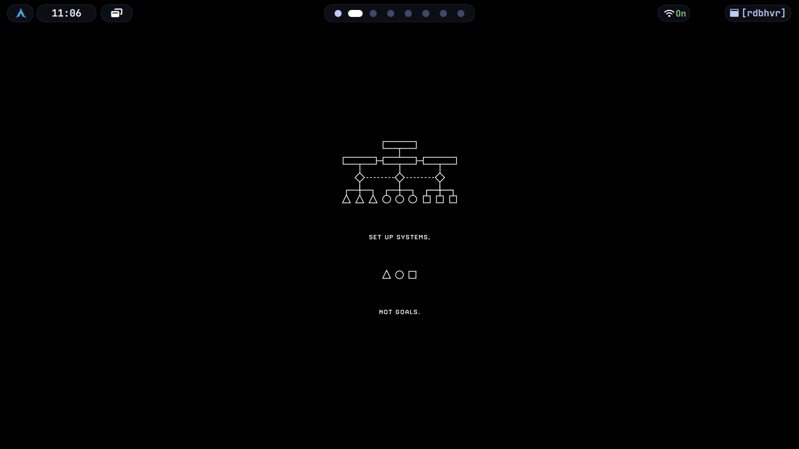
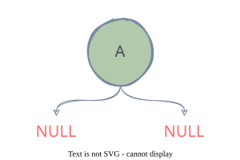
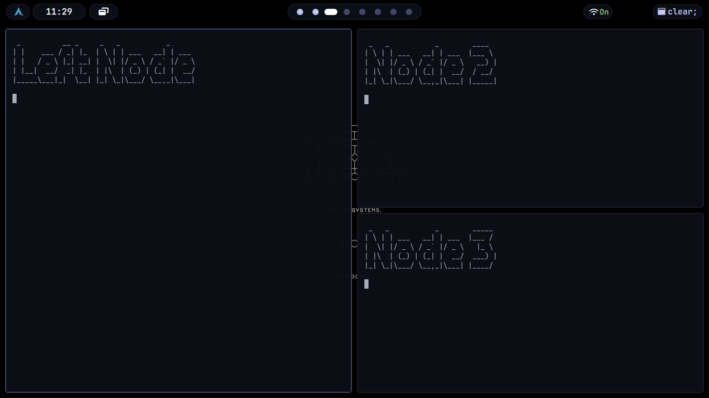

Getting Started with Bspwm Wiki

What is bspwm-wiki?
It is a comprehensive and complete documentation for the Binary Space Partitioning Window Manager (BSPWM).
Bspwm is a tiling window manager which uses binary space partition system. (C students must have known what it means). Unlike other dynamic window managers like dwm and awesomewm, bspwm is what you configure and use. It is possible to do anything with correct integration of configs : bspwm + sxhkd + eww or polybar, you will get a perfectly aligned environment that obeys your thoughts. I named this documentation as bspwm-wiki because it is short and aligns with documentation policy of my interest.
Tip
If you do not know what exactly is binary space partitioning, don’t worry, the documentation will teach you.
What exactly is the purpose of The bspwm-wiki?
There has not been a very good documentation about the bspwm window manager in the web. Many beginners in linux stumble upon understanding the workflow and the exact process behind bspwm and struggle by copying someone else’s configuration blindly hoping that it works on their system too. Real power users do not copy, they build upon an already existing config or build something entirely from the scratch.
Linux punishes weak fundamentals, not because it is cruel towards you, but because it wants to make you stronger. Understanding about The Binary Space Partitioning Window Manager and Binary Space Partitioning before writing your first bspwm configuration will make you write optimised and good configs better than your copycat versions.
Most of the configurations are using bspwm in an underrated way. For example, people rerely use the query selectors with flags to batch-manipulate windows. Here’s an on-liner that toggles hidden states across all windows…
if [ -n "$(bspc query -N -n .hidden)" ]; then flag=off; else flag=on; fi
for i in $(bspc query -N); do
bspc node $i --flag hidden=$flag
done
The above code matters because it unhides or hides all windows dynamically, no tiling rules or scratchpads, reproducible, scriptable UI hacks…
Another powerful feature is the selector magic : @, which looks like : bspc node -f @parent, which lets you targe relative nodes - parent, first child, brother, etc…
This documentation aims in providing short scripts, cool tips for speeding up workflows, links to several popular bspwm configurations for quick references, a detailed explanation for the working logic behind bspwm, complete manipulation of the windows, advanced configurations and complex logic structures like : Open alacritty in the second workspace on every sunday nights in horizontally tiled mode along with ncmpcpp in a seperate alacritty window with so and so split ratio, when you have the habit of listening to music on sunday nights while working!
Everything you want to know about the bspwm window manager, you will get it here…
Help People Discover bspwm-wiki
-
Help others find about such an extensive documentation for bspwm by contributing to this project. You can open up pull requests, do corrections and error analysis for the code blocks in this documentation and expand it by adding specific case examples and linking other bspwm related projects.
-
If you find this documentation really useful to you, you can star this repository which will increase the ease with which this documentation is found and make it easier for people to reach out to this.
Note
If you have any issues related to codes provided in this documentation, you can open up an issue in the github repository.
Github repositories
Pages
Getting Started with Bspwm
What is Bspwm?
At its core, bspwm is a tiling window manager that represents windows as the leaves of a full binary tree. This description, while accurate, conceals the profound implications of that choice.
Important
To understand bspwm is to understand that it is not a window manager that happens to use a tree data structure for implementation convenience. Rather, it is a system where the tree is the fundamental reality, and everything you see on screen is merely a visual projection of that tree’s current state.
When bspwm starts, it creates an empty canvas. This canvas is divided into monitors, each monitor contains desktops, and each desktop holds a pointer to a binary tree. The tree begins empty. As windows arrive, they become leaves in this tree, and the tree grows according to principles that are mathematical and deterministic rather than aesthetic or heuristic. The tree does not care about your visual preferences. It does not optimize for beauty. It grows according to splitting logic, and the windows you see arranged on screen are the inevitable consequence of that tree’s structure.
This is the first and most important conceptual shift required to understand bspwm: the window layout is not designed. It is emergent. You are not arranging windows in space. You are building a tree, and space arrangement is what happens when that tree is rendered.
Binary Space Partitioning as Foundation
Note
Definition Binary space partitioning is a technique borrowed from computer graphics and spatial databases. The fundamental operation is simple: take a region of space and divide it into exactly two sub-regions. Then take those sub-regions and divide each of them into two more sub-regions. Continue recursively. The result is a hierarchical subdivision of space where every split creates exactly two children, and every window occupies one undivided leaf region.
In bspwm, this manifests as follows. When the first window appears on an empty desktop, it occupies the entire available rectangle. (See figure 1.1) The tree is a single leaf node. When a second window arrives, bspwm must make a decision: should this space be split horizontally or vertically, and should the new window become the first child or the second child of the split? This decision is controlled by the automatic insertion scheme, which can be set to longest side, alternate, or spiral.

Figure 1.1 : In the above given figure, there are two windows open : quickshell, another is the desktop itself. Here I used feh to fill the background, which itself acts as a seperate window.The longest side scheme examines the dimensions of the focused window’s tiling rectangle and splits along whichever axis is longer. If width exceeds height, the split is vertical, dividing left and right. If height exceeds width, the split is horizontal, dividing top and bottom. This creates a visual effect where windows tend toward squareness because each split reduces the dominant dimension.
The alternate scheme ignores geometry entirely and alternates splitting direction with each new window. First split is vertical, second is horizontal, third is vertical, and so on. This produces a regular grid-like pattern when windows are added in sequence.
The spiral scheme, which is often the default, generates a clockwise or counter-clockwise spiral pattern depending on whether each new window becomes the first or second child of its parent. This scheme creates what resembles a Fibonacci-like layout where windows wrap around the perimeter of the tree.
Note
But these schemes are not layouts in the traditional sense.
They are tree construction algorithms. The layout you see is what happens when you render a tree that was built using a particular insertion rule. This distinction becomes critical when you try to modify the tree later, because bspwm provides no operation to “change the layout.” You can only modify the tree structure itself—rotate it, flip it, change split ratios, or manually rearrange nodes—and the visual layout changes as a consequence.
Knowing the Bspwm Tree
The Tree as Living State
A binary tree in bspwm consists of two types of nodes: internal nodes and leaf nodes. Internal nodes represent splits. They contain no windows. Their only purpose is to divide a rectangle into two smaller rectangles by storing a splitting type (horizontal or vertical) and a splitting ratio (a value between zero and one that determines how much of the parent rectangle goes to the first child versus the second child). (See figure 1.2)

Figure 1.2: This is a representation of the root node A. It has two splits, i.e internal nodes having no windows. A is usually your screen with wallpaper.Leaf nodes represent windows. They sit at the bottom of the tree and hold references to actual X11 windows. When bspwm needs to display windows on screen, it performs a tree traversal. Starting from the root, it recursively subdivides the desktop rectangle according to each internal node’s splitting parameters until it reaches the leaves, at which point it knows the exact geometry for each window.
This means that a window’s size and position are not properties of the window itself. They are computed properties derived from the path taken through the tree to reach that window’s leaf node.
Important
If you want to resize a window, you are not resizing the window. You are adjusting the split ratio of an internal node somewhere in the tree above that window, which then propagates down through the tree structure to change multiple windows’ geometries simultaneously.
Consider three windows arranged in a tree where window one occupies the left half of the screen, and windows two and three are stacked vertically in the right half. The tree structure is an internal node at the root with a vertical split at ratio zero point five (See figure 1.3).The left child is a leaf containing window one. The right child is another internal node with a horizontal split at ratio zero point five, and that node’s children are leaves containing windows two and three.

Figure 1.3: Representation of 3 nodes in bspwm
If you want to make window two larger, you cannot do this directly. You must identify the internal node that splits between windows two and three, then adjust its ratio. This internal node is the parent of both windows. Changing its ratio to, say, zero point seven means window two now receives seventy percent of the available height in the right half of the screen, and window three receives thirty percent. But notice that window one was completely unaffected, because that window is not a descendant of the node you modified.
Important
This tree-centric view explains behaviors that confuse new users. If you try to resize a window and nothing happens, it is because the focused window is an only child and has no sibling with which it shares a split. If you resize a window and three other windows also change size, it is because you modified a split high in the tree that affects multiple descendants. If you move a window to a new position and its size changes unexpectedly, it is because that window now occupies a different leaf position in the tree, and leaf positions have geometries determined by their ancestral splits.
The tree is not an implementation detail. It is the model. Everything else follows from it. We will see more about this in schemes of bspwm.
Seperation of Concerns
Separation of Mechanism from Policy
Most window managers are monolithic. They contain input handling, window placement logic, configuration parsing, layout algorithms, and rendering code all in one executable. They make decisions on behalf of the user, embedding policies like “new windows should open in the largest empty space” or “when you press Super plus J, focus the window below” directly into their source code.
Bspwm Uses Seperation of Concerns
bspwm rejects this entirely. Its philosophical foundation is the separation of mechanism from policy, a design principle articulated in operating systems research dating back to the RC 4000 multiprogramming system and prominently featured in the Hydra operating system developed at Carnegie Mellon in the nineteen seventies. The principle states that mechanisms—the low-level tools that enforce operations—should not dictate the policies that determine when and how those operations are used. Mechanisms answer how. Policies answer when and what.
bspwm provides mechanisms. It knows how to manage a binary tree of windows. It knows how to split nodes, rotate trees, change split ratios, move focus between nodes, and render window geometries. It knows how to respond to X events like MapRequest when a new window appears, or ConfigureRequest when a window wants to change size. But bspwm contains no policy for how these mechanisms should be triggered.
This means bspwm does not handle keyboard input. It does not know what Super plus Return means. It does not bind keys to actions. It does not even contain a configuration file in the traditional sense. Instead, bspwm listens on a Unix domain socket for messages that instruct it to perform specific actions. Another program must translate user input into those messages.
That is why sxhkd is alive
The typical companion is sxhkd, the Simple X Hotkey Daemon. sxhkd reads a configuration file that maps key combinations to shell commands. When you press Super plus Return, sxhkd sees the input and executes whatever command you have associated with that key. If you want that key to launch a terminal, the command might be “urxvt.” If you want that key to focus the window to the east, the command is “bspc node --focus east.” sxhkd knows nothing about windows or trees. It only knows keys and commands. bspwm knows nothing about keys. It only knows trees and operations on trees. This separation allows you to replace sxhkd with any input handler you prefer, or to control bspwm entirely through scripts, or to build a graphical control panel, all without modifying bspwm itself.
The configuration file for bspwm, typically located at $XDG_CONFIG_HOME/bspwm/bspwmrc, is not a configuration file in the declarative sense. It is a shell script.
Warning
Most of the users who are new to bspwm treat
bspwmrcas a configuration file in literal sense, which is actually a shell script. It starts as usual with ashebanglike any other shell script.
When bspwm starts, it executes this script, and that script can do anything a shell script can do. Usually it calls bspc repeatedly to set configuration values, define window rules, and set up monitors and desktops. But it could also start background processes, check system state, perform calculations, or download data from the internet. The script is just code that runs once at startup.
This intentional emptiness is not a limitation. It is the source of bspwm’s power. Because bspwm makes no assumptions about how you want to interact with it, you can build any interaction model you want. You can implement dynamic tagging like in dwm by writing a script that moves windows between desktops based on custom logic. You can implement focus-follows-mouse or click-to-focus or focus-on-hover by writing a daemon that listens to pointer events and sends focus messages to bspwm. You can implement automatic window placement rules that depend on time of day, system load, or the phase of the moon. bspwm does not care. It will execute whatever commands you send to its socket.
This is the second conceptual shift: bspwm is not a window manager you configure. It is a window manager you program.
The Role of bspc as Message Interface
bspc is the program that sends messages to bspwm. Its name stands for binary space partitioning control, and it exists solely to communicate with bspwm’s socket. Every time you invoke bspc, it connects to bspwm’s Unix domain socket, sends a message formatted according to bspwm’s protocol, waits for a response, and then terminates.
The socket itself is typically located at /tmp/bspwm_hostname_display-number_screen-number, forming a unique pattern like bspwm_0_0-socket .The environment variable BSPWM underscore SOCKET can override this location if needed.
Command Syntax of Bspwm
bspc's command syntax follows a domain-selector-command structure. The domain specifies what type of entity you are operating on: node for windows, desktop for desktops, monitor for monitors, query for retrieving information, subscribe for listening to events, rule for setting window rules, config for changing settings, and wm for window manager commands. The selector specifies which specific entity within that domain, and the command specifies what action to perform.
For example, the message bspc node east --focus means operate on the node domain, select the node to the east of the currently focused node, and execute the focus command on it. The message bspc desktop focused --layout monocle means operate on the desktop domain, select the currently focused desktop, and set its layout to monocle.
Selectors are powerful and composable. You can select nodes by direction (north, south, east, west), by cycle (next, prev), by path through the tree (using symbols like @ and \ to navigate the tree structure), by node ID, by window class, by state, by flag, and many other criteria. You can chain modifiers to narrow selection, such as bspc node focused.tiled.!hidden which means select the focused node, but only if it is tiled and not hidden.
This selector system allows scripts to query and manipulate bspwm state with precision. You can ask bspwm to list all window IDs, list all tiled windows on the current desktop, find the largest window, find all windows belonging to a specific application, or traverse the tree to find the sibling of the focused node’s parent’s parent. bspwm will respond with the requested information or perform the requested action.
The query command is particularly important because it allows external programs to inspect bspwm’s internal state. bspc query --nodes --desktop focused returns a list of all node IDs on the focused desktop. bspc query --tree returns a JSON representation of the entire tree structure, complete with node IDs, window classes, geometries, and splitting parameters. With this information, external scripts can implement arbitrarily complex logic, then send commands back to bspwm to modify the tree based on that logic.
The Fundamental Difference Between Other WMs and BSPWM
This is fundamentally different from how most window managers work. In i3, for example, you configure behaviors by editing the i3 configuration file and telling i3 to reload it. In bspwm, you configure behaviors by writing programs that continuously observe and modify bspwm’s state through message passing. bspwm is not a statically configured system. It is a dynamically controlled process.
How Bspwm Manages Nodes
How Windows Enter the System
When a new window appears on the X server, the X server sends a MapRequest event to the window manager. This is the X protocol’s way of saying “a new window wants to be displayed, and you are responsible for deciding where it goes and whether it is allowed to be visible.” bspwm receives this event and must respond by either mapping the window (making it visible and assigning it geometry) or ignoring it.
The Rule System
bspwm’s first action is to consult its rule system. Rules are pattern-matching directives that associate window properties like class name, instance name, or title with consequences like state, desktop, monitor, split direction, or whether the window should be managed at all. Rules are set using the bspc rule command, typically in the bspwmrc script.
A rule might say “windows with class name Gimp should be floating” or “windows with class name Firefox should go to desktop three” or “windows with instance name scratchpad should be sticky and float above all other windows.” When a new window arrives, bspwm extracts its properties using X protocols like ICCCM and EWMH, then checks whether any rule matches those properties. If a match is found, the rule’s consequences are applied.
If you have defined an external rule command using the bspc config external_rules_command setting, bspwm will also execute that command, passing the window ID, class name, and instance name as arguments. The command can output additional consequences in key-value format. This allows rule logic to be implemented in any language and can depend on arbitrary external state.
Processing of the Rules
After rules are processed, bspwm must decide where in the tree to insert the new window. This decision depends on the insertion point and the insertion mode. The insertion point is the node that will be replaced or split to accommodate the new window. By default, the insertion point is the currently focused window’s node.
If the insertion point is in manual mode, meaning a preselection has been set, then bspwm follows the preselection. Preselection is when you explicitly tell bspwm “the next window should appear to the north of the currently focused window” by sending a command like bspc node --presel-dir north . This creates a visual indicator showing where the next window will appear and puts the node into manual mode. When a window arrives, bspwm splits the insertion point in the preselected direction, makes the new window one child and the insertion point the other child, and then clears the preselection and returns to automatic mode.
If the insertion point is in automatic mode, which is the default when no preselection is set, bspwm uses the automatic insertion scheme to decide how to split. As described earlier, this scheme can be longest side, alternate, or spiral. The scheme determines the split direction and which child position the new window receives. The existing node at the insertion point becomes an internal node, the new window becomes one of its children, and the previous content of that node moves into the other child.
This insertion process is where the tree’s structure is defined. Once a window is inserted as a leaf, its position in the tree is fixed unless you explicitly rearrange the tree later using commands like swap, rotate, or flip. The tree does not reorganize itself automatically based on window closing or opening. It grows organically as windows are added, and it is up to you to prune and reshape it when it becomes unwieldy.
Navigating the Bspwm Tree
Focus and Navigation Through the Tree
Focus in bspwm is a pointer in the tree. The focused node is whichever node currently holds the user’s attention. This node is typically a leaf containing a window, though technically focus can exist on an internal node during tree manipulation operations. The focused node receives keyboard input and is visually distinguished by having a different border color than unfocused nodes.
Navigation commands change focus by traversing the tree structure or by evaluating spatial relationships. The fundamental directional navigation commands are bspc node --focus north, bspc node --focus south, bspc node --focus east and bspc node --focus west. These commands attempt to move focus in the specified direction, but what does “move focus east” mean in the context of a binary tree?
Note
bspwm offers two algorithms for directional focus, controlled by the
directional_focus_tightnesssetting. The first algorithm, used when this setting ishighfinds the node on the other side of the focused window’s edge in the target direction by consulting the tree structure. If you focus east, bspwm walks up the tree until it finds an ancestor that has a child to the east, then descends into that child, choosing the leftmost or rightmost descendant depending on whether you are moving east or west. This algorithm is fast and deterministic but can feel unintuitive because it depends on tree structure rather than visual proximity.
The second algorithm, used when the setting is low finds the nearest window in the target direction based on geometric distance. bspwm calculates the Euclidean distance between the focused window’s center and the centers of all other windows, then selects the closest window that lies in the specified direction. This feels more natural visually but is slower and can produce unexpected results when windows overlap in unusual configurations.
New users often find directional focus unpredictable, especially with the tree-based algorithm. They press east and expect to move to the visually adjacent window on the right, but instead focus jumps across the screen to a distant window that happens to be the first child of a sibling subtree. This behavior is perfectly logical from the tree’s perspective—you are moving to the first descendant of the parent’s other child—but it does not match the visual layout’s spatial intuition.
Tip
Understanding this requires internalizing the tree structure. If you have three windows arranged such that window one is on the left half, window two is on the top right quarter, and window three is on the bottom right quarter, the tree structure might be: root splits vertically with window one on the left and an internal node on the right, and that internal node splits horizontally with window two above and window three below. If focus is on window one and you press east, bspwm ascends to the root, moves to the right child (the internal node), then descends to that node’s first child, which is window two. You skip over window three entirely, even though it is also to the east, because window two is the first child of the right subtree. To reach window three from window one, you would need to press east twice, or press next to cycle through siblings. (See Figure 1.3)
This is why focus behavior becomes predictable once you understand the tree. The tree is the map. Direction commands navigate that map, not the visual space.
Knowing the Presentation Modes
Monocle, Fullscreen, Floating, and Pseudo-Tiling as Tree Interpretations
bspwm supports several presentation modes for windows: tiled, pseudo-tiled, floating, and fullscreen. Additionally, desktops can be set to monocle layout.
Note
New users often think of these as different layouts, like i3’s tabbed mode or stacking mode. This is incorrect. These are interpretations of the same underlying tree.
The tree always exists. It is never replaced or abandoned. When you set a desktop to monocle layout, the tree remains intact with all its splits and ratios. What changes is how bspwm renders that tree.
In monocle mode, bspwm ignores the tree’s geometric subdivisions and instead displays only one window at a time, maximizing that window to fill the desktop rectangle. The other windows are still in the tree, still have their tree positions, but they are not visible. You can cycle through them with next and prev commands, which walk the tree in depth-first order and bring each window to the front in turn.
When you switch the desktop back to tiled layout, the tree structure reappears exactly as it was before monocle mode, because monocle was only a rendering choice, not a structural change.
Fullscreen is similar. When you set a window to fullscreen state, that window expands to cover its entire monitor rectangle and is raised above all other windows. But it is still a leaf in the tree. Its tree position is unchanged. Other windows are still present in their tree positions, just occluded from view. If you unfullscreen the window, the tree’s tiling layout reappears instantly because it never went away.
Floating state removes a window from the tiling space but does not remove it from the tree. A floating window can be moved and resized freely with the mouse or with explicit move and resize commands. It does not occupy any tiling space, meaning it does not affect the geometries of tiled windows. But it is still a node in the tree. You can still navigate to it with tree-based selectors. You can still swap it with other nodes, rotate the subtree it belongs to, or query its tree path. It is simply rendered differently—placed wherever you position it rather than in the geometry calculated from its tree path.
Pseudo-tiled is a hybrid state. The window remains in the tree and occupies tiling space like a tiled window, but it does not expand to fill that space. Instead, it centers itself within the available rectangle at its preferred size, as reported through X size hints. This is useful for windows that have intrinsic dimensions, like dialogs or image viewers, which look wrong when stretched to arbitrary sizes. They participate in the tree’s space allocation but render at their natural size.
All of these states coexist within the same tree. You can have a desktop with two tiled windows, one floating window, and one fullscreen window, all simultaneously present in the tree structure. The tree determines topology. State determines rendering. They are orthogonal properties.
This explains why closing a floating window does not affect tiled window geometries, even though closing a tiled window does. When a tiled window closes, its leaf node is removed from the tree, and the tree is restructured. The parent of the removed node is deleted, and the sibling of the removed node takes the parent’s place, which can change geometries for other windows if that parent was high in the tree. But a floating window occupies no tiling space, so removing its leaf node does not require restructuring. The tree simply has one fewer leaf, and nothing else changes.
Nature of Rules and External Rules
The Nature of Rules and External Rules
Rules in bspwm are not conditional statements evaluated when you write them. They are data structures stored in a list, checked whenever a new window appears. When you execute bspc rule --add Gimp state=floating, you are appending an entry to bspwm’s internal rule list that says : “if class name matches Gimp, apply the consequence state=floating”
Rules can specify multiple consequences separated by spaces. bspc rule --add Firefox desktop=three follow=on means windows with class Firefox should be sent to desktop three, and focus should follow them there. Consequences can include desktop, monitor, state, layer, split_dir, split_ratio, hidden, sticky, private, locked, marked, center, and others.
The split_dir consequence is particularly powerful because it allows you to predefine how a window will be inserted into the tree. If you know that terminal windows should always split to the east of the focused window, you can add a rule with split_dir=east and every new terminal will automatically behave as if you had manually preselected east before opening it.
External rules extend this system by allowing rule consequences to be computed at runtime by an arbitrary program. You set the external_rules_command configuration value to point to a script, and bspwm will execute that script for every new window, passing the window ID, class name, instance name, and any intermediate consequences from built-in rules as arguments. The script can perform any computation—it can check the window’s title, query external databases, inspect system state, or use machine learning—and it outputs consequences in key=value format.
Note
This makes bspwm’s rule system Turing-complete.
Any decision you can express as a program can be implemented as a rule. You could write an external rule script that assigns windows to desktops based on current time, sending email clients to desktop one during work hours and entertainment applications to desktop two during evenings. You could assign windows to monitors based on available memory or CPU load. You could implement complex tiling patterns by computing split directions algorithmically.
Tip
Want dynamically changing rule?
The limitation is that rules are evaluated only when windows are mapped. They do not continuously re-evaluate. If you want dynamic behavior that responds to changing conditions, you must implement that as a separate daemon that subscribes to bspwm events and sends commands based on those events.
Bspwm as a Reactive Model
Event Subscription and the Reactive Model
The subscribe command allows external programs to receive real-time notifications when bspwm’s state changes. bspc subscribe followed by event types opens a stream of events that are emitted as newline-separated text. Event types include node_add, node_remove, node_swap, node_focus, desktop_focus, monitor_focus, node_state, node_flag, node_layer, node_geometry, desktop_layout, and many others.
Each event message contains the event type and relevant data such as monitor ID, desktop ID, node ID, and event-specific parameters.
Note
For example, when focus changes to a new window, bspwm emits a
node_focusevent with the IDs of the monitor, desktop, and node that received focus. When a window’s geometry changes, anode_geometryevent includes the new geometry values.
This event stream enables reactive programming. You can write a daemon that subscribes to events and responds to state changes with actions. For instance, you could subscribe to node_focus events and automatically adjust window opacity based on focus state, making the focused window fully opaque and all others semi-transparent. You could subscribe to desktop_focus events and change your status bar’s appearance based on which desktop is active. You could subscribe to node_add events and automatically balance the tree whenever a new window appears.
The Pattern :
The pattern is typically subscribe to events, parse the event stream, maintain internal state if necessary, and send commands back to bspwm based on event data. Since bspwm itself is stateless between commands—it only maintains the tree and current configuration—external daemons become the memory of your system, tracking history, learning patterns, and implementing policy.
Important
This is the third conceptual shift: bspwm is not a window manager that does things. It is a window manager that allows things to be done to it. Your desktop environment is the sum of all programs that communicate with bspwm’s socket.
Necessity of the Bspwm Socket
The Socket as System Boundary
The Unix domain socket is the architectural boundary between bspwm and the rest of the system. Everything inside the socket is pure mechanism which includes :
- tree manipulation
- geometry calculation
- X event handling
- window state management
Everything outside the socket is pure policy which includes :
- when to manipulate the tree
- which geometries are desirable
- how to respond to events
- which windows should receive special treatment.
This boundary is absolute. There is no way to inject policy into bspwm without using the socket. There is no configuration option that changes bspwm’s core behavior. All configuration options set parameters for the mechanisms, like split_ratio or window_gap, but they do not implement policy logic. Policy lives in your keybinding daemon, your external rule script, your event subscribers, and your shell scripts.
The socket protocol is text-based and human-readable. You can manually connect to the socket using a tool like netcat or socat and type commands interactively. This makes debugging straightforward.
Tip
If a keybinding is not working, you can send the corresponding bspc command directly to verify that bspwm responds correctly. If an external rule is not firing, you can manually trigger the external rule command with test inputs.
The socket is also the reason bspwm can be controlled remotely. Any program on the system can connect to the socket and send commands. This enables integration with other tools.
There are endless possibilities with bspc socket
You could write a web interface that lets you control your window layout from a browser. You could build a voice-controlled interface that translates speech to bspc commands. You could implement automatic window management based on signals from other applications, like tiling development tools when you open a compiler or focusing communication apps when someone messages you.
bspwm does not care where commands come from. It only cares that they are syntactically valid messages that specify operations on its tree. This is the ultimate expression of mechanism-policy separation: the mechanism is locked inside the socket boundary, and policy is whatever you choose to implement outside it.
Introductory References
Citations and References
This document is based on verified information from the following authoritative sources:
- Official bspwm GitHub repository : readme.md - Primary source for bspwm’s architecture and design philosophy
- bspwm manual pages across multiple distributions (Ubuntu, Arch, Debian) - Authoritative documentation of commands, configuration, and behavior
- Separation of mechanism and policy (Wikipedia and academic sources) - Computer science design principle that underpins bspwm’s architecture, introduced by Per Brinch Hansen and implemented in systems like Hydra at Carnegie Mellon University
- Community documentation including Bspwm Basics guide : dharmx’s bspwm-basics - Detailed technical explanations of tree operations and insertion schemes
All factual claims about bspwm’s behavior, configuration, commands, and architecture have been cross-referenced against official documentation and manual pages. The philosophical framework draws from established computer science principles documented in operating systems research literature.
You can visit any of the above given links to verify or learn more about introductory concepts of bspwm that we have seen in past 11 chapters. The main part in bspwm comes next. Understanding the syntax and turning it into a system.
The bspc config command
Introduction to bspc command
Bspwm is controlled and configured via the bspc command. In practice one writes a shell script (typically $XDG_CONFIG_HOME/bspwm/bspwmrc) that calls bspc config to set various options. The general syntax is:
bspc config [ -m MONITOR | -d DESKTOP | -n NODE ] < setting > [< value >]
This gets or sets the value of < setting >. Without selectors, the setting applies globally; with -m, -d, or -n it targets a specific monitor, desktop or node. Each option affects bspwm’s behavior: for example, bspc config border_width 3 sets the width of window borders to 3 pixels. The settings below comprise every configurable parameter (as of the latest stable bspwm) and include the option’s role, valid values, default behavior, and examples.
Window Borders and Colors
Bspwm uses window borders to indicate focus and state. The global border color settings are:
normal_border_color: color for an unfocused window’s border.
active_border_color: color for a focused window on an unfocused monitor.
focused_border_color: color for a focused window on the active monitor.
Each of these accepts any color string #RRGGBB or named X color. For example, to make the focused window’s border red:
bspc config focused_border_color "#FF0000"
Tip
You can query the current color with bspc config focused_border_color
A special feedback color, presel_feedback_color, governs the border drawn during manual split-preselection (preselection feedback). For instance, setting
bspc config presel_feedback_color "#00FF00"
will draw a green highlight where a split will occur.
The border_width option (a node setting) sets the thickness in pixels of the window border. Its default is 1 pixel; to make borders thicker, e.g.:
bspc config border_width 2
These parameters control the visual frame around windows. In the monocle layout (one-window fullscreen mode), two special flags exist: borderless_monocle (boolean) removes borders when in monocle mode, and gapless_monocle removes any window gaps in monocle layout. Finally, single_monocle (boolean) forces the layout to switch to monocle when only one window is present. For example:
bspc config borderless_monocle true
bspc config gapless_monocle true
bspc config single_monocle true
These would eliminate borders and gaps in monocle layout and make that layout automatic for lone windows.
Splitting and Layout
The split_ratio setting defines how a window is partitioned when a new window is inserted in automatic mode. It is a fraction between 0 and 1. For example,
bspc config split_ratio 0.60
makes new splits 60/40 by default (i.e. the first child gets 60% of the space). The default is 0.5 (even split) unless changed in your config.
Window spacing is controlled by window_gap (desktop setting), which is the number of pixels of space between tiled windows. To add a 10px gap everywhere, use:
bspc config window_gap 10
Monocle-layout padding can also be set. The options top_monocle_padding, right_monocle_padding, bottom_monocle_padding, and left_monocle_padding (all in pixels) add blank space at the screen edges when in monocle mode. For example, to center a monocle window with a 20px top margin:
bspc config top_monocle_padding 20
Important
In summary,
split_ratioandwindow_gapaffect tiling splits and inter-window gaps, while the monocle flags/padding fine-tune fullscreen behavior.
Automatic Tiling and Preselection
Bspwm can tile windows automatically or under manual preselection. The automatic_scheme option chooses the insertion algorithm: it accepts longest_side, alternate, or spiral. This determines how the binary partitioning tree expands. For example:
bspc config automatic_scheme spiral
switches to the “spiral” insertion pattern.
Note
By default bspwm uses
alternateautomatic scheme which alternates between vertical and horizontal splits.
The initial_polarity option determines on which side a new window is attached in an automatic split when a node has only one child. It can be first_child or second_child. For instance:
bspc config initial_polarity first_child
makes new windows attach on the first (left or top) side of the split by default. (By default this is usually second_child.)
Other related options: directional_focus_tightness (high or low) tweaks how strictly bspwm decides whether a window is “in the DIR side” of another for focus commands. removal_adjustment (boolean) controls whether bspwm adjusts (re-splits) the sibling when a node is removed from the tree; turning it off can leave odd splits if windows are closed.
Preselection (manual tiling) can be toggled with pointer commands or key bindings. The presel_feedback setting (boolean, defaults to true) enables the visible overlay that shows where a manual split will occur. If you disable it (bspc config presel_feedback false), bspwm will still respect manual split commands but won’t draw the highlighted region.
In short, these settings define how bspwm splits windows: the scheme, where new windows attach, and how strictly the tiling is adjusted or visualized.
Pointer and Focus Behavior
Bspwm lets you use the mouse (with a modifier key) to move/resize windows and to control focus. The pointer_modifier setting specifies which keyboard modifier (e.g. mod4 for the Super/Windows key) enables pointer actions. For example:
bspc config pointer_modifier mod4
Means holding Super while clicking/draggings acts on windows.
By default, pointer_modifier+Button1 moves a window, Button2 resizes by dragging a side, and Button3 resizes by dragging a corner. These defaults correspond to pointer_action1=move, pointer_action2=resize_side, pointer_action3=resize_corner. You can reassign them; e.g.:
bspc config pointer_action1 resize_side
bspc config pointer_action2 move
swaps the actions for button1 and button2. Setting pointer_action< n > to none disables that action.
Focus via mouse clicking is controlled by click_to_focus. It takes button1, button2, button3, any, or none. The default is button1 (left click focuses). For example, to focus windows with a middle-click:
bspc config click_to_focus button2
The swallow_first_click flag (boolean) prevents the click event that focuses a window from being passed to the application. If true, clicking to focus will not (for example) click buttons in the newly focused window; this is useful if you want a click to only change focus.
Pointer and focus warping: focus_follows_pointer (boolean) makes focus follow the mouse pointer; if enabled, simply moving the mouse over a window will focus it. Conversely, pointer_follows_focus (boolean) warps the pointer to the center of the newly focused window, and pointer_follows_monitor does the same for the newly focused monitor. These are all off by default, but can be turned on with e.g.:
bspc config focus_follows_pointer true
bspc config pointer_follows_focus true
In summary, the pointer settings let you pick a modifier key and mouse button actions to move/resize windows, and to configure click-to-focus and pointer warping behaviors.
EWMH Hints and Miscellaneous
Bspwm can ignore or honor certain EWMH hints (state requests from other applications) via these settings.
ignore_ewmh_focus (boolean) ignores focus requests from EWMH-compliant clients. If true, external programs cannot change window focus.
ignore_ewmh_fullscreen can be none, all, or a comma-separated list enter,exit. It blocks clients that try to put windows into fullscreen (setting the _NET_WM_STATE_FULLSCREEN hint). For example, bspc config ignore_ewmh_fullscreen all will prevent all EWMH fullscreen changes.
ignore_ewmh_struts (boolean) ignores the EWMH strut hints that panels and docks use to reserve screen space. If you have an always-on-top panel, setting this to true makes bspwm ignore its struts (useful if your panel is external and you don’t want bspwm to avoid it).
center_pseudo_tiled (boolean, defaults to true) determines whether pseudo-tiled windows (tiled windows that respect size hints) are centered in their area. For example, floating dialogs can be treated as pseudo-tiled; if true, bspwm will center them in their split. You can turn it off with bspc config center_pseudo_tiled false.
honor_size_hints (boolean) tells bspwm to apply ICCCM size hints from applications. Enabling this makes bspwm honor the minimum/maximum size hints that some X programs request.
mapping_events_count (integer) sets how many mapping notify events bspwm should process. By default it only handles one (focusing windows, etc.), but a negative value means “handle all.” This is a rare, low-level option usually left at 0 or 1.
Important
These options govern how bspwm reacts to external hints or special windows. Use them to integrate bspwm with other desktop components (EWMH panels, fullscreen requests) or to tweak size-hint behavior.
Monitor and Desktop Settings
Padding at screen edges is controlled by the top_padding, right_padding, bottom_padding, and left_padding settings (monitor/desktop settings). These are pixel values added as empty space on each side of the screen or desktop. This is commonly used to leave room for panels or docks. For example, to leave a 24px gap at the top (e.g. for a status bar):
bspc config top_padding 24
bspc config bottom_padding 0
bspc config left_padding 0
bspc config right_padding 0
With this, bspwm will tile windows below that 24px area.
Bspwm can also manage multiple monitors dynamically. The boolean flags remove_disabled_monitors, remove_unplugged_monitors, and merge_overlapping_monitors (all default false) adjust bspwm’s behavior on monitor changes. For instance, if you set bspc config remove_unplugged_monitors true, any monitor that is unplugged (e.g. a laptop lid closing) will be treated as disconnected and its desktops moved elsewhere. These are advanced options for multi-head setups.
Global Misc Settings
status_prefix: a string prefixed to each bspc event line (used in status scripts). For example, setting
bspc config status_prefix "[bspwm] "
causes all window/desktop events sent to status bars to start with “ ”.
external_rules_command: path to an external script that provides window rule assignments. If set, bspwm will call this command each time a new window appears, passing it the window’s ID, class, and instance, and expecting key=value outputs for rule keys (like split_ratio=0.7, desktop=2, etc.). For example:
bspc config external_rules_command "$HOME/.config/bspwm/rules.sh"
where rules.sh might output something like center=on follow=on. This allows dynamic, programmatic control of window placement.
Note
These global options are less frequently changed, but status_prefix can help integrate bspwm with custom panels, and external_rules_command enables advanced window rule logic.
Usage Examples
Below is a sample snippet of a bspwmrc configuring several options (annotated for clarity):
# Set focused/unfocused border colors
bspc config focused_border_color "#3585ce" # blue border for focused windows
bspc config normal_border_color "#444444" # gray for others
# Set default split ratio and gaps
bspc config split_ratio 0.55 # 55/45 split by default
bspc config window_gap 10 # 10px gap between windows
# Monocle layout tweaks
bspc config borderless_monocle true # no borders in monocle mode
bspc config top_monocle_padding 20 # 20px padding on top in monocle
# Pointer/mouse actions
bspc config pointer_modifier mod4 # use Super key for pointer actions
bspc config pointer_action3 none # disable corner resize
bspc config click_to_focus any # any click focuses window
bspc config swallow_first_click true # do not forward the click event
# Automatic tiling scheme
bspc config automatic_scheme alternate # alternate insert (default)
bspc config initial_polarity second_child # new windows on second child by default
# Layout hints
bspc config focus_follows_pointer true # focus on mouse-over
bspc config center_pseudo_tiled false # disable centering pseudo-tiled
# Padding for panels
bspc config top_padding 30 # leave 30px at top for panel
Each bspc config command above changes an aspect of bspwm’s layout or behavior, as documented. For a complete reference of all options and their meanings, see the bspwm manual (man page).
The bspc query command
BSPC Query Commands and Flags
The bspc query interface provides read-only commands to inspect BSPWM’s internal state. The core query subcommands are:
-N, --nodes – list matching node IDs (windows or internal tree nodes).
-D, --desktops – list matching desktop IDs (or names with –names).
-M, --monitors – list matching monitor IDs (or names with –names).
-T, --tree – print a JSON representation of the matching object (monitor, desktop or node).
Each of the above accepts optional selectors (given in brackets) to filter which items match. For example,
bspc query -N # (with no selector)
prints all node IDs on the current desktop (including parent and receptacle nodes and leaf windows).
To list only window (leaf) nodes, one can add a node selector:
bspc query -N -n .window
lists just the actual window nodes.
In general a selector like .window, .leaf, .tiled, etc., may be appended (after a -n or -d flag) to match only nodes with that property. (Any valid node, desktop or monitor selector can be used according to the BSPWM reference.)
For example, if two windows are open on the focused desktop, running:
bspc query -N
# Outputs
# 0x01A00001
# 0x01B00001
lists their node IDs (hex values may vary). Using a selector,
bspc query -N -n .window
would return the same IDs in this case, whereas without -n .window BSPWM might include an extra internal parent node ID as well.
Desktop listing (-D, –desktops): The -D subcommand lists the IDs of matching desktops. By default it outputs hex IDs, but adding --names prints desktop names. For example, on a monitor with desktops named “1”, “2”, “3”,
bspc query -D --names
might output:
1
2
3
while the query -
bspc query -D
(IDs only) might output:
0x00A00001
0x00A00002
0x00A00003
The -D command can also be scoped: e.g. bspc query -D -m HDMI-1 lists only desktops on monitor “HDMI-1”. Similarly, using -D -d focused lists only the (ID or name of the) currently focused desktop.
Monitor listing (-M, –monitors): The -M subcommand lists monitor IDs. With --names, it prints monitor names (the X11 output names). For example,
bspc query -M --names
might output:
HDMI-1
DP-1
on a two-monitor setup. Without --names, it might show corresponding hexadecimal IDs. Monitors can also be filtered: bspc query -M -n focused lists just the focused monitor (which yields a single ID/name).
Tree output (-T, –tree): The -T flag instructs bspc query to output a JSON-formatted tree of the matching object. By itself (with no selectors) bspc query -T prints a JSON object for the focused desktop: it includes the layout, nodes, and metadata for all windows on that desktop. You can combine it with other flags to select the target: for example,
bspc query -T -d focused # or simply bspc query -T
You can also query subtrees: e.g.
bspc query -T -n focused
emits the JSON tree rooted at the currently focused window (containing just that leaf). The output is verbose JSON; in scripts you might pipe it through jq or similar to extract fields.
Scope options (-m, -d, -n): The flags -m [MON_SEL], -d [DESK_SEL], and -n [NODE_SEL] constrain a query to a specific monitor, desktop, or node. For example, bspc query -N -d 2 lists nodes on desktop index 2. (Selectors can be numeric indices, names, or special syntax like ^1 for the first desktop.) Likewise, bspc query -D -m ^2 lists desktops on the second monitor (by order). These options accept the same selector syntax as used in other bspc commands. Omitting the descriptor is allowed: e.g.
bspc query -M -d focused
first selects the focused desktop then lists its monitor.
Name output (–names): The --names flag causes -M or -D to output human-readable names instead of hex IDs. It has no effect with -N (node IDs always appear as hex) or -T (JSON always uses IDs internally). For instance, bspc query -D –names on desktops named “web” and “code” would print those names.
Deprecated query flags: In older BSPWM versions (≈0.8.x), there was a -W, --windows subcommand that listed window (leaf) node IDs. For example, forum discussions show:
Note
bspc query -W -d $DESKTOP | wc -lwill return the number of windows on $DESKTOP. This-Woption was removed in BSPWM 0.9 in favor of using-Nwith a.windowselector. (In modern BSPWM, you would dobspc query -N -n .windowto get the same list of window IDs.)
Examples: Here are some illustrative commands. To list all node IDs on the current desktop:
bspc query -N
To list only window (leaf) nodes:
bspc query -N -n .window
To list all desktop names on monitor HDMI-1:
bspc query -D -m HDMI-1 --names
To show the JSON tree of the focused desktop:
bspc query -T -d focused
In summary, all bspc query subcommands across BSPWM releases are -N/--nodes, -D/--desktops, -M/--monitors, and -T/--tree, along with the filtering flags -m/--monitor, -d/--desktop, -n/--node, and the formatting flag --names.
Warning
The
-W/--windowscommand existed in older 0.8-series releases but is no longer present and is currently deprecated. We recommend you to avoid the usage of--windowsflag in the configuration.
The query selectors
Selectors choose a node (window), desktop (workspace) or monitor for bspc commands. The general shape is an optional reference, a descriptor, and zero or more modifiers, written like:
[REFERENCE#]DESCRIPTOR(.MODIFIER)*
The reference is another selector (used when computing a relative target). Modifiers narrow or invert the descriptor. All of the concrete descriptors and modifiers below are taken from the official bspc manual — use them exactly as shown.
Tip
In order to flip the descriptor, you have to prefix it with and exclamatory mark
!. Yeah, the one which looks like theinverted iis used to invert the meaning , i.e negate the meaning of the discriptor.
Node selectors (windows / tree leaves)
A node selector (NODE_SEL) picks a node (a leaf or internal node in BSPWM’s binary tree). Its descriptor can be a direction (north|west|south|east), a cyclic direction (next|prev), an explicit path, any, first_ancestor, last, newest, older, newer, focused, pointed, biggest, smallest, or a raw node id. Examples and detailed meanings follow; each paragraph explains one descriptor and includes an example showing how to use it with bspc query -N.
focused selects the currently focused node. To print the node id for the focused window:
bspc query -N focused
pointed selects the leaf under the pointer (mouse). Useful when combining pointer actions with scripts:
bspc query -N pointed
Directional descriptors (north, south, east, west) select a window in that spatial direction relative to the reference node (default reference is the focused node). For example, to get the node id to the west of the focused window:
bspc query -N west
Cyclic descriptors next / prev walk the tree in a depth-first in-order traversal;
bspc query -N next
returns the next node in that ordering relative to the reference.
any returns the first node matching any appended modifiers; it’s a convenience for “give me a node that matches these constraints”. For example, to find any floating window on the current desktop:
bspc query -N any.floating
first_ancestor jumps up the tree from the reference node and returns the first ancestor that matches appended modifiers (useful when you want the container rather than the leaf). Example:
bspc query -N first_ancestor.window
last returns the previously focused node relative to the reference node (i.e., focus history), and newest, older, newer are history-based descriptors referring to nodes in the focus history. Example asking for the newest node in the focused-node history:
bspc query -N newest
biggest and smallest select the leaf with the largest or smallest onscreen area (size metrics come from the window tree). Example:
bspc query -N biggest.window
A raw < node_id > also works: if you already have a node id (e.g., 0x80000d), you can pass it as the descriptor to target exactly that node:
bspc query -N 0x80000d
Paths let you jump around the tree explicitly. The PATH form is written with a leading @ and optional desktop prefix, then jumps (first|1, second|2, brother, parent, or a DIR).
For instance, @/first starts from the root of the default (or referenced) desktop and jumps to its first child; to query that node id:
bspc query -N @/first
Important
Modifiers refine matching. For nodes you can append
.focused,.active,.automatic,.local,.leaf,.window, a state like.floatingor.tiled, flags like.hiddenor.urgent, layer.above,.normal,.below, split type.horizontal/.vertical, or relations like.same_class,.descendant_of, .ancestor_of. Prefix any modifier with!to invert it.
Example: return the node id of the focused window only if it is floating:
bspc query -N focused.floating
Use ! to invert: find a focused node that is not floating:
bspc query -N focused.!floating
Note
Everything in this node section follows the canonical NODE_SEL grammar in the man page.
Desktop selectors (workspaces)
Desktop selectors (DESKTOP_SEL) pick a desktop. Descriptors include next|prev (cyclic), any, last, newest, older, newer, focused, numeric ^< n > (nth desktop), desktop id, or desktop name; you may also prefix with a monitor selector MONITOR_SEL: to pick the nth desktop on a particular monitor.
Example to print the name or id of the focused desktop:
bspc query -D focused --names
To pick the second desktop on the currently focused monitor use the ^<n> notation:
Note
You have to quote the
^<n>as shown in the code below. Otherwise the shell (bash, zsh or any POSIX shell) wil expand ‘^’ and you may run into errors or unexpected behaviours.
bspc query -D '^2' --names
To pick the nth desktop on a specific monitor by monitor selector (e.g., primary):
bspc query -D primary:^3 --names
Desktop modifiers include .focused (only consider focused desktops), .active (desktops that are focused on their monitor), .occupied (contain windows), .urgent, and .local (limit to the reference monitor).
For example, to list IDs of all occupied desktops on the current monitor:
bspc query -D any.occupied
If you leave out a descriptor where allowed (the descriptor can be omitted for -D/-M/-N in some cases), the default is the focused target for that domain. The desktop selector details and modifier names are from the bspc manual.
Monitor selectors
Monitor selectors (MONITOR_SEL) choose monitors. Descriptors are north|west|south|east (spacial DIR relative to the reference monitor), next|prev (cycle), any, last, newest, older, newer, focused, pointed, primary, ^<n> (nth monitor), monitor id, or monitor name.
For example, to print the names of all monitors:
bspc query -M --names
To target the primary monitor:
bspc query -M primary --names
Monitor modifiers are .focused and .occupied (where the focused desktop on that monitor is occupied). For example, to find the monitor under the pointer and get its id:
bspc query -M pointed
Practical bspc query examples using selectors
Show node ids for all windows on the focused desktop (returns a list of node ids):
bspc query -N
Show node ids for windows that are floating on the focused desktop:
bspc query -N any.floating
Show the id of the window under the mouse pointer:
bspc query -N pointed
Show the id (or name with –names) of the currently focused desktop:
bspc query -D focused --names
Show names of all monitors in visual order:
bspc query -M --names
Return the previously focused desktop (useful when scripting focus toggles):
bspc query -D last --names
Select the first ancestor of the focused node that is a container (useful to operate on the subtree enclosing a window):
bspc query -N first_ancestor
Combine selectors and modifiers to target a node by class relation: for example, choose any node that has the same class as the focused node but is not floating:
bspc query -N any.same_class.!floating
Notes, pitfalls and best practices
Note
Selectors are evaluated relative to a reference (default is the focused item).
Use explicit references when you need deterministic behavior across monitors/desktops, for example prefix a path with a desktop selector
@[DESKTOP_SEL:]….Remember to quote shell-sensitive tokens like
^2or tokens containing!.The
!inversion applies to individual modifiers (e.g.,.!occupied), not to whole descriptors.The man page or the bspwm-wiki(this) is the authoritative source for the exact names, allowed modifiers and the path jump syntax — consult it when you need exhaustive precision.
Writing configs using bspc
Executive Summary
This documentation provides an in-depth exploration of bspwm (Binary Space Partitioning Window Manager) configuration, derived entirely from authoritative web sources. BSPWM is a sophisticated tiling window manager that represents windows as leaves of a full binary tree, controlled entirely through the bspc command-line client. This guide comprehensively covers every flag, command-line option, configuration setting, and advanced technique required to create a highly sophisticated and customized BSPWM environment. The documentation is organized to progress from foundational concepts through complex configuration scenarios, with detailed explanations of each component extracted directly from official documentation and community resources.
Understanding the Architecture and Fundamental Concepts
The Binary Space Partitioning Model
BSPWM fundamentally operates differently from other tiling window managers through its binary tree architecture. Unlike traditional grid-based layouts, BSPWM represents windows as the leaves of a full binary tree, where each split divides the available space into exactly two nodes. This architectural choice provides exceptional flexibility for window arrangements and enables sophisticated manipulation of window layouts through tree operations. The window manager only responds to X11 events and messages received on a dedicated socket, which is handled exclusively through the bspc client.
The Client-Server Model
The relationship between BSPWM and its control interface is built on a socket-based client-server model. BSPWM itself runs as a daemon and listens on a socket for messages from bspc, the command-line client that sends configuration commands and window management instructions. This separation provides exceptional modularity and allows complete configuration through shell scripts, making BSPWM exceptionally scriptable compared to window managers that require specialized configuration languages. The socket path, by default, follows the pattern /tmp/bspwm<hostname>_<display>_<screen>-socket, but can be customized through the BSPWM_SOCKET environment variable.
Configuration File Structure
BSPWM configuration resides in a single shell script located at $XDG_CONFIG_HOME/bspwm/bspwmrc, which typically resolves to ~/.config/bspwm/bspwmrc. This configuration file contains shell commands that invoke bspc to set up the window manager environment. The beauty of this approach lies in its simplicity: no special configuration language is required, and users can leverage any shell scripting capabilities to create dynamic, conditional configurations. When BSPWM starts, it executes this shell script, which should contain commands to start necessary daemons (like keyboard managers), set up monitors and desktops, configure display properties, and launch supporting applications.
BSPWM Command Structure and Domains
Overview of the BSPC Command
The bspc command functions as the exclusive interface to BSPWM, accepting a specific structure that organizes functionality into domains. The general syntax follows: bspc DOMAIN [SELECTOR] COMMANDS. This structure allows granular control over window manager behavior, from global settings to desktop-specific configurations to individual window manipulations. Understanding this hierarchical structure is essential for creating sophisticated configurations.
Available Domains and Their Purposes
BSPWM organizes all functionality into six primary domains:
- node: Controls individual window (node) operations
- desktop: Manages desktop/workspace-level settings
- monitor: Handles monitor-specific configurations
- query: Retrieves metadata and state information
- rule: Defines window matching and application rules
- wm: Controls global window manager states
Additionally, specialized domains handle config, subscribe, and quit operations. The subscribe domain enables event-driven scripting, a powerful feature for creating dynamic window management behaviors.
Node Domain: Individual Window Control
Node-Specific Commands
The node domain manages individual windows (called nodes in BSPWM terminology). When no selector is provided, the command defaults to the focused node. All node operations follow the syntax: bspc node [NODE_SEL] COMMAND.
Focus Operations: -f and --focus
The -f or –focus flag changes focus to a specified node. When used alone, it focuses the selected node; when given a NODE_SEL argument, it focuses that specific node. For example:
bspc node -f west- Focus the window to the westbspc node -f biggest- Focus the largest window
The focus command respects node selectors and modifiers, enabling complex selection patterns.
Activation: -a and --activate
The -a or –activate flag differs from focus by setting a node as active without necessarily giving it keyboard focus. This distinction is important in multi-monitor setups where you may want to highlight a window’s visual state independently of input focus. The activate command accepts an optional NODE_SEL parameter.
Desktop Transfer: -d and --to-desktop
The -d or –to-desktop flag sends a node to a specified desktop. The syntax is: bspc node -d DESKTOP_SEL. The optional –follow flag can be appended to maintain focus on the moved node after transfer. For example:
bspc node -d '^2' --follow- Move focused node to desktop 2 and maintain focus
Monitor Transfer: -m and --to-monitor
The -m or –to-monitor flag transfers a node to a specified monitor. Syntax: bspc node -m MONITOR_SEL. The –follow flag similarly maintains focus after the transfer. This is particularly useful in multi-monitor setups for dynamically redistributing windows.
Node-to-Node Transfer: -n and --to-node
The -n or –to-node flag moves a node to become a sibling of another specified node. This powerful operation enables precise positioning within the binary tree structure. The –follow flag again allows focus to follow the transferred node. Example:
bspc node -n newest.!automatic.local- Move focused node to the newest preselected area
Swapping Nodes: -s and --swap
The -s or –swap flag exchanges positions of two nodes in the tree, effectively swapping their visual positions and tiling spaces. The syntax is: bspc node -s NODE_SEL. The –follow flag moves focus to the swapped node’s new position. This differs from moving: the nodes exchange places rather than one replacing the other.
Preselection Direction: -p and --presel-dir
The -p or –presel-dir flag enables manual insertion mode by specifying where the next spawned window should appear relative to the current node. Valid directions are: north, south, east, west. Additionally, ~DIR syntax cancels a preselection if it matches the specified direction. For example:
bspc node -p east- Next window spawns to the east of current nodebspc node -p ~east- Cancel east preselection if currently active
Preselection Ratio: -o and --presel-ratio
The -o or –presel-ratio flag sets the proportion of space allocated to the preselected area. The RATIO parameter must be between 0 and 1. For instance, bspc node -o 0.4 allocates 40% of space to the preselected area and 60% to the existing content. This works in conjunction with preselection direction.
Node Movement: -v and --move
The -v or –move flag shifts a node’s position by pixel offsets. Syntax: bspc node -v dx dy. Both dx and dy are pixel values representing horizontal and vertical displacement. This command is particularly useful for floating windows, allowing pixel-perfect positioning adjustments.
Node Resizing: -z and --resize
The -z or –resize flag adjusts node dimensions by specifying an edge and pixel adjustments. Valid edges include: top, left, bottom, right, top_left, top_right, bottom_right, bottom_left. Syntax: bspc node -z EDGE dx dy. The dx and dy values represent horizontal and vertical pixel adjustments. For example:
bspc node -z right 20 0- Expand right edge by 20 pixels
Node Type/Split Cycling: -y and --type
The -y or –type flag changes or cycles the split type of a node’s parent. Valid arguments are horizontal, vertical, or next to cycle between types. This operation rotates the tree’s splitting orientation. Example:
bspc node -y next- Toggle between horizontal and vertical splits
Split Ratio Adjustment: -r and --ratio
The -r or –ratio flag modifies the split ratio of a node’s parent, controlling space distribution between siblings. Syntax: bspc node -r RATIO where RATIO is a decimal from 0-1, or (+|-)(PIXELS|FRACTION) for relative adjustments. For instance:
bspc node -r 0.6- Set split ratio to 60/40bspc node -r +0.05- Increase split ratio by 5%
Tree Rotation: -R and --rotate
The -R or –rotate flag rotates the tree rooted at the selected node. Valid angles are: 90, 270, 180. This operation is useful for dynamically rearranging window hierarchies. Example:
bspc node -R 90- Rotate tree 90 degrees clockwise
Tree Flipping: -F and --flip
The -F or –flip flag flips the tree rooted at the selected node. Valid directions are: horizontal, vertical. This mirrors the tree structure along the specified axis. Example:
bspc node -F horizontal- Flip tree horizontally
Tree Equalization: -E and --equalize
The -E or –equalize flag resets all split ratios within a node’s subtree to their default values (typically 0.5). This is useful for restoring a balanced layout after manual ratio adjustments.
Tree Balancing: -B and --balance
The -B or –balance flag adjusts split ratios within a subtree so all leaves occupy equal area. Unlike equalization, which resets all ratios identically, balancing respects the existing tree structure while equalizing final window areas.
Tree Circulation: -C and --circulate
The -C or –circulate flag moves windows within a tree in a circular pattern. Valid directions are: forward, backward. This operation is particularly useful for dynamic window rotation without explicit swapping.
Node State: -t and --state
The -t or –state flag changes a node’s state (tiling mode). Valid states are: tiled, pseudo_tiled, floating, fullscreen. The ~ prefix toggles to the previous state if the current state matches, or restores the previous state if no state is specified. Syntax: bspc node -t STATE. Examples:
bspc node -t floating- Make window floatingbspc node -t ~floating- Toggle floating state
Node Flags: -g and --flag
The -g or –flag flag manages binary flags that modify node behavior. Valid flags are: hidden, sticky, private, locked, marked, urgent. The flag syntax accepts optional =on|off to explicitly set state. Each flag serves a specific purpose:
- hidden: Node is hidden and doesn’t occupy tiling space
- sticky: Node stays on the focused desktop of its monitor
- private: Node resists movement and resizing during automatic insertion
- locked: Node ignores the close (
-c) message - marked: Arbitrary flag used for custom operations; unmarked automatically when sent to a preselected node
- urgent: Indicates window urgency (typically set externally); used for window selection
Examples:
bspc node -g sticky=on- Make window stickybspc node -g marked- Toggle marked flag
Node Layering: -l and --layer
The -l or –layer flag changes a node’s stacking layer. Valid layers are: below, normal, above. BSPWM maintains three stacking layers where below < normal < above, and within each layer: tiled/pseudo_tiled < floating < fullscreen. Examples:
bspc node -l above- Place window above all othersbspc node -l below- Place window below all others
Receptacle Insertion: -i and --insert-receptacle
The -i or --insert-receptacle flag creates a receptacle (empty leaf node) at the selected node’s position. Receptacles are particularly useful for creating predefined layouts that can be filled with windows later.
Node Closure: -c and --close
The -c or –close flag closes a node by sending it the close message. This respects the locked flag; if set, the message is ignored.
Node Termination: -k and –kill
The -k or –kill flag forcibly terminates a node’s window regardless of flags or settings. This is a hard termination that bypasses all safety mechanisms.
Node Selector Syntax
Node selectors determine which nodes are affected by commands. They follow the pattern: [REFERENCE#]DESCRIPTOR[.MODIFIER]*.
Node Descriptors
Descriptors specify the initial node selection:
- DIR (north|west|south|east): Relative direction
- CYCLE_DIR (next|prev): Cyclic direction
- any: Any node
- first_ancestor: First non-leaf ancestor
- last: Most recently focused
- newest: Most recently created
- older: Older than focused in history
- newer: Newer than focused in history
- focused: Currently focused node
- pointed: Node under mouse pointer
- biggest: Largest node by area
- smallest: Smallest node by area
- <node_id>: Direct node ID reference
Node Modifiers
Modifiers further filter the selection:
- [!]focused: Currently/not currently focused
- [!]active: Active/not active on desktop
- [!]automatic: In automatic/manual insertion mode
- [!]local: On/not on current desktop
- [!]leaf: Is/isn’t a leaf node
- [!]window: Has/doesn’t have a window
- [!]STATE: Matches/doesn’t match state (tiled|pseudo_tiled|floating|fullscreen)
- [!]FLAG: Has/doesn’t have flag (hidden|sticky|private|locked|marked|urgent)
- [!]LAYER: On/not on layer (below|normal|above)
- [!]SPLIT_TYPE: Split type (horizontal|vertical)
- [!]same_class: Same/different class as focused
- [!]descendant_of: Is/isn’t descendant of reference
- [!]ancestor_of: Is/isn’t ancestor of reference
Path Jumps
Path jumps navigate the tree structure:
- first|1: First child
- second|2: Second child
- brother: Sibling node
- parent: Parent node
- DIR: Directional jump
Desktop Domain: Workspace Management
Desktop-Specific Commands
The desktop domain manages workspace-level settings and operations. Syntax: bspc desktop [DESKTOP_SEL] COMMAND. If no DESKTOP_SEL is provided, the focused desktop is targeted.
Desktop Focus: -f and --focus
The -f or –focus flag switches focus to a specified desktop. Example:
bspc desktop -f '^2'- Focus the 2nd desktopbspc desktop -f next- Focus next desktop
Desktop Activation: -a and --activate
The -a or –activate flag sets a desktop as active (similar to node activation). This is distinct from focus and is useful in multi-monitor scenarios.
Desktop Transfer to Monitor: -m and --to-monitor
The -m or --to-monitor flag transfers a desktop to a different monitor. Syntax: bspc desktop -m MONITOR_SEL. The optional –follow flag moves focus to the transferred desktop.
Desktop Swapping: -s and --swap
The -s or –swap flag exchanges two desktops. Syntax: bspc desktop -s DESKTOP_SEL. The –follow flag maintains focus continuity.
Layout Selection: -l and --layout
The -l or --layout flag sets or cycles the desktop’s layout. Valid layouts are: tiled, monocle, or next to cycle. BSPWM provides two built-in layouts:
- tiled: Standard binary space partitioning with visible splits
- monocle: Fullscreen layout where only the most recently focused tiled/pseudo_tiled window is visible
Examples:
bspc desktop -l monocle- Switch to monocle layoutbspc desktop -l next- Cycle to next layout
Desktop Renaming: -n and --rename
The -n or --rename flag changes a desktop’s name. Syntax: bspc desktop -n <new_name>. Desktop names are used in keybindings and configurations.
Desktop Cycling: -b and --bubble
The -b or --bubble flag moves a desktop within the monitor’s desktop list. Direction values are next or prev. This reorders desktops without changing their content.
Desktop Removal: -r and `–remove**
The -r or --remove flag deletes a desktop. Windows on the removed desktop are transferred to the next available desktop.
Desktop Selector Syntax
Desktop selectors determine which desktops are affected.
Desktop Descriptors
- CYCLE_DIR (next|prev): Cyclic direction
- any: Any desktop
- last: Most recently focused
- newest: Most recently created
- older: Older in history
- newer: Newer in history
- focused: Currently focused
- ^< n >: The nth desktop
- MONITOR_SEL:focused: Focused desktop on specified monitor
- <desktop_id>: Direct ID reference
- <desktop_name>: By name
Desktop Modifiers
- [!]focused: Currently/not focused
- [!]active: Active/not active on desktop
- [!]occupied: Has/doesn’t have windows
- [!]urgent: Contains/doesn’t contain urgent windows
- [!]local: On/not on current monitor
- [!]LAYOUT: Matches/doesn’t match layout
- [!]user_LAYOUT: Custom layout matching
Monitor Domain: Multi-Monitor Configuration
Monitor-Specific Commands
The monitor domain controls monitor-specific settings and operations. Syntax: bspc monitor [MONITOR_SEL] COMMAND.
Monitor Focus: -f and --focus
The -f or --focus flag switches focus to a specified monitor. Example:
bspc monitor -f DP-1- Focus monitor named DP-1bspc monitor -f next- Focus next monitor
Monitor Swapping: -s and --swap
The -s or --swap flag exchanges two monitors. This is useful for reversing display order.
Add Desktops: -a and --add-desktops
The -a or --add-desktops flag creates new desktops on a monitor. Syntax: bspc monitor -a <name>.... Multiple desktop names can be provided. Example:
bspc monitor -a I II III IV V- Create five desktops named I through V
Reorder Desktops: -o and --reorder-desktops
The -o or --reorder-desktops flag changes the order of desktops on a monitor. Syntax: bspc monitor -o <name>.... The order must match existing desktop names.
Reset Desktops: -d and --reset-desktops
The -d or --reset-desktops flag reconfigures desktops, adding, removing, or renaming as needed. Syntax: bspc monitor -d <name>.... This command automatically handles all necessary adjustments.
Monitor Rectangle: -g and --rectangle
The -g or --rectangle flag manually sets monitor geometry. Syntax: bspc monitor -g WxH+X+Y. This is useful for multi-display configurations or unusual setups.
Monitor Renaming: -n and --rename
The -n or --rename flag changes a monitor’s name. Syntax: bspc monitor -n <new_name>.
Monitor Removal: -r and --remove
The -r or --remove flag removes a monitor from management. Desktops on the removed monitor are transferred to remaining monitors.
Monitor Selector Syntax
Monitor selectors determine which monitors are affected.
Monitor Descriptors
- DIR (north|west|south|east): Spatial direction
- CYCLE_DIR (next|prev): Cyclic direction
- any: Any monitor
- last: Most recently focused
- newest: Most recently added
- older: Older in history
- newer: Newer in history
- focused: Currently focused
- pointed: Monitor under pointer
- primary: Primary monitor
- ^< n >: The nth monitor
- <monitor_id>: By monitor ID
- <monitor_name>: By name (e.g., HDMI-1)
Monitor Modifiers
- [!]focused: Currently/not focused
- [!]occupied: Has/doesn’t have occupied desktops
Query Domain: State Information Retrieval
Query Commands
The query domain retrieves metadata and state information. Syntax: bspc query COMMANDS [OPTIONS].
Node Query: -N and --nodes
The -N or --nodes flag returns node IDs. Syntax: bspc query -N [NODE_SEL]. Without selectors, returns all node IDs. With selectors, returns matching nodes. Example:
bspc query -N -n focused- Get ID of focused nodebspc query -N -n .window- Get IDs of all window nodes
Desktop Query: -D and --desktops
The -D or --desktops flag returns desktop IDs. Syntax: bspc query -D [DESKTOP_SEL]. Returns all desktop IDs when no selector is given.
Monitor Query: -M and --monitors
The -M or --monitors flag returns monitor IDs. Syntax: bspc query -M [MONITOR_SEL]. Returns all monitor IDs without selector.
Tree Query: -T and --tree
The -T or --tree flag returns the complete tree structure in JSON or text format. This comprehensive output shows all relationships and states. Example:
bspc query -T- Output complete tree statebspc query -T -m DP-1- Tree for specific monitor
Query Options
Query results can be filtered and formatted.
Monitor Specification: -m and --monitor
The -m or --monitor option filters results to a specific monitor. Syntax: bspc query -m MONITOR_SEL.
Desktop Specification: -d and --desktop
The -d or --desktop option filters to a specific desktop. Syntax: bspc query -d DESKTOP_SEL.
Node Specification: -n and --node
The -n or --node option filters to a specific node. Syntax: bspc query -n NODE_SEL.
Names Output: --names
The --names flag outputs entity names instead of IDs. This is useful for human-readable output.
Rule Domain: Window Matching and Defaults
Rule Management Commands
The rule domain defines patterns and default configurations for new windows.
Adding Rules: -a and --add
The -a or --add flag creates a new rule. Syntax: bspc rule -a [CLASS[:INSTANCE[:NAME]]] [options]. The class, instance, and name can be wildcards using *. Fields can be escaped with backslash.
Rule properties include:
- monitor=MONITOR_SEL: Target monitor
- desktop=DESKTOP_SEL: Target desktop
- node=NODE_SEL: Target node (for insertion)
- state=STATE: Initial state (tiled|pseudo_tiled|floating|fullscreen)
- layer=LAYER: Initial layer (below|normal|above)
- honor_size_hints=(true|false|tiled|floating): Whether to respect ICCCM size hints
- split_dir=DIR: Preselection direction
- split_ratio=RATIO: Preselection ratio
- hidden=(on|off): Initially hidden state
- sticky=(on|off): Sticky flag state
- private=(on|off): Private flag state
- locked=(on|off): Locked flag state
- marked=(on|off): Marked flag state
- center=(on|off): Center floating windows
- follow=(on|off): Focus follows window
- manage=(on|off): Whether window is managed
- focus=(on|off): Initial focus state
- border=(on|off): Show window borders
- rectangle=WxH+X+Y: Initial geometry for floating windows
The -o or --one-shot flag makes the rule apply only once.
Examples:
bspc rule -a Firefox desktop=^2 follow=onbspc rule -a Gimp state=floating follow=off
Removing Rules: -r and --remove
The -r or --remove flag deletes rules. Syntax: bspc rule -r PATTERN. Patterns can be head, tail, ^< n > for index, or a class/instance/name pattern.
Listing Rules: -l and --list
The -l or --list flag displays all currently active rules.
External Rules Script
For complex matching logic beyond the built-in rule syntax, BSPWM supports external rule scripts. The external_rules_command setting specifies a script path. This script receives window information and outputs rule properties.
Script invocation: SCRIPT wid class instance name
Example external rules script:
#!/bin/sh
case "$2" in
Firefox)
echo "desktop=^2 follow=on"
;;
Gimp)
echo "state=floating"
;;
esac
Config Domain: Global Configuration
Configuration Settings
The config domain manages global, monitor-specific, desktop-specific, and node-specific settings.
General Syntax
bspc config [-m MONITOR_SEL|-d DESKTOP_SEL|-n NODE_SEL] <setting> [<value>]
Global Settings
Color Settings
Colors are specified in hexadecimal format: #RRGGBB
- normal_border_color: Border color for unfocused windows
- active_border_color: Border color for active (desktop-focused) windows
- focused_border_color: Border color for focused windows
- presel_feedback_color: Color of preselection indicator
Layout and Splitting
- split_ratio: Default ratio for binary splits (0 < ratio < 1)
- automatic_scheme: Algorithm for automatic window placement. Valid values:
- longest_side: Split along longest edge
- alternate: Alternate between horizontal and vertical
- spiral: Create spiral patterns
- initial_polarity: Which child receives the new window in automatic mode. Valid values:
- first_child: New window becomes first child
- second_child: New window becomes second child
- directional_focus_tightness: Strictness of directional focus algorithm. Valid values:
- high: Stricter matching
- low: Looser matching
Insertion and Removal
- removal_adjustment: Whether to readjust layout after window removal
- presel_feedback: Whether to show preselection feedback
Monocle Layout
- borderless_monocle: Remove borders in monocle layout
- gapless_monocle: Remove gaps in monocle layout
- top_monocle_padding, right_monocle_padding, bottom_monocle_padding, left_monocle_padding: Padding for monocle layout
- single_monocle: Switch to monocle if only one window remains
Status and Behavior
- borderless_singleton: Remove borders when only one window exists
- status_prefix: Prefix for status messages
- pointer_motion_interval: Minimum milliseconds between pointer motion updates
- pointer_modifier: Keyboard modifier for pointer actions. Valid values:
- shift, control, lock
- mod1 (Alt), mod2, mod3
- mod4 (Super), mod5
- pointer_action1, pointer_action2, pointer_action3: Mouse button actions. Valid values:
- move: Move floating windows
- resize_side: Resize from edge
- resize_corner: Resize from corner
- focus: Focus on click
- none: No action
- click_to_focus: Mouse button for focus-on-click. Valid values: button1, button2, button3, any, none
- swallow_first_click: Consume first click when focusing
- focus_follows_pointer: Focus window under pointer
- pointer_follows_focus: Move pointer to focused window
- pointer_follows_monitor: Move pointer to focused monitor
EWMH Compatibility
- mapping_events_count: How many mapping events to process
- ignore_ewmh_focus: Ignore EWMH focus requests
- ignore_ewmh_fullscreen: Ignore fullscreen requests. Valid values: none, all, or comma-separated enter, exit
- ignore_ewmh_struts: Ignore taskbar/panel space reservations
- center_pseudo_tiled: Center pseudo_tiled windows
Monitor Management
- remove_disabled_monitors: Remove monitors that are disabled
- remove_unplugged_monitors: Remove unplugged monitors
- merge_overlapping_monitors: Merge monitors with overlapping geometry
Monitor and Desktop Settings
Padding
Applied at monitor and desktop levels:
- top_padding, right_padding, bottom_padding, left_padding: Space reserved around the desktop edges. Commonly set to bar heights
Desktop Settings
Window Gap
- window_gap: Pixel spacing between windows. Can be set negative to create gapless layouts
Node Settings
Borders and Hints
- border_width: Border thickness in pixels
- honor_size_hints: Respect ICCCM window size hints. Valid values:
- true: Apply to all windows
- false: Don’t apply
- tiled: Apply only to tiled windows
- floating: Apply only to floating windows
Subscribe Domain: Event-Driven Scripting
Event Subscription
The subscribe domain enables reactive scripting based on window manager events. Syntax: bspc subscribe [OPTIONS] (all|report|monitor|desktop|node|...)*.
Subscription Options
FIFO Output: -f and --fifo
The -f or --fifo flag outputs events to a named FIFO instead of stdout. This enables long-lived subscriptions.
Event Count: -c and --count
The -c or --count flag exits after receiving COUNT events.
Available Events
Monitor Events
- monitor_add: New monitor connected
- monitor_rename: Monitor renamed
- monitor_remove: Monitor disconnected
- monitor_swap: Monitors swapped positions
- monitor_focus: Focus changed to monitor
- monitor_geometry: Monitor geometry changed
Desktop Events
- desktop_add: Desktop created
- desktop_rename: Desktop renamed
- desktop_remove: Desktop deleted
- desktop_swap: Desktops swapped
- desktop_transfer: Desktop transferred to different monitor
- desktop_focus: Desktop focus changed
- desktop_activate: Desktop activated
- desktop_layout: Layout changed
Node Events
- node_add: Window added
- node_remove: Window removed
- node_swap: Windows swapped
- node_transfer: Window transferred
- node_focus: Window focus changed
- node_activate: Window activated
- node_presel: Preselection changed
- node_stack: Stack order changed
- node_geometry: Window geometry changed
- node_state: Window state changed
- node_flag: Window flag changed
- node_layer: Stacking layer changed
Report Event
The report event outputs the complete current state in a specific format.
Event Processing Example
Using events to perform actions:
bspc subscribe node_add | while read -a msg; do
desk_id=${msg[^1_2]}
wid=${msg[^1_4]}
# Make new windows fullscreen
bspc node "$wid" -t fullscreen
done
Wm Domain: Window Manager State
Global Window Manager Operations
The wm domain controls global window manager state and operations.
Dump State: -d and --dump-state
The -d or --dump-state flag outputs the complete window manager state. This is useful for backing up configurations or analysis.
Load State: -l and --load-state
The -l or --load-state** flag restores a previously dumped state. Syntax: bspc wm -l <file_path>`.
Add Monitor: -a and --add-monitor
The -a or --add-monitor flag manually adds a monitor to management. Syntax: bspc wm -a <name> WxH+X+Y. Useful for dynamic monitor addition.
Reorder Monitors: -O and --reorder-monitors
The -O or --reorder-monitors flag changes the global monitor order. Syntax: bspc wm -O <name>....
Adopt Orphans: -o and --adopt-orphans
The -o or --adopt-orphans flag brings unmanaged windows under BSPWM control.
Record History: -h and --record-history
The -h or --record-history** flag enables/disables command history logging. Syntax: bspc wm -h on|off`.
Get Status: -g and --get-status
The -g or --get-status flag outputs the current status.
Restart: -r and --restart
The -r or `–restart** flag restarts BSPWM while preserving windows. This is useful during configuration updates.
Window States and Flags
Window States
Each window maintains exactly one state at any time:
Tiled
Tiled state means the window fills its assigned tiling space without overlapping others. Windows are arranged according to the binary tree structure. This is the default state for new windows.
Pseudo-Tiled
Pseudo-tiled windows respect ICCCM size hints while being centered within their tiling space. They can be resized but maintain their centered position.
Floating
Floating windows can be positioned and resized freely anywhere on the desktop. They don’t participate in automatic tiling but remain part of the node tree.
Fullscreen
Fullscreen windows occupy their monitor’s entire rectangle with no borders. They’re placed above other content. When a fullscreen window is present and a new floating window is created, BSPWM must change the fullscreen window to tiled to display the floating window on top, unless the floating window is placed on the above layer.
Window Flags
Flags are independent states that can be combined:
Hidden
Hidden windows don’t occupy tiling space and aren’t visible. They’re useful for implementing scratchpads and minimization-like functionality.
Sticky
Sticky windows follow the focused desktop on their monitor. When switching desktops, sticky windows appear on the new desktop.
Private
Private windows resist movement and resizing during automatic insertion. When inserting new windows into automatic mode, private nodes maintain their position and size rather than being split.
Locked
Locked windows ignore the close message sent by bspc node -c. They require forceful termination with bspc node -k.
Marked
Marked is an arbitrary flag useful for custom operations. It’s particularly valuable in conjunction with preselection to implement deferred window movement. Marked nodes automatically become unmarked when sent to a preselected node.
Urgent
Urgent indicates a window requiring attention. It’s typically set externally by applications (e.g., when incoming messages arrive). BSPWM uses this flag for window selection.
Stacking Layers
BSPWM implements three independent stacking layers:
- below: Lowest layer
- normal: Middle layer (default)
- above: Top layer
Within each layer, the window order follows: tiled & pseudo_tiled < floating < fullscreen. This means a floating window on the “below” layer appears above tiled windows on that layer but below all windows on the “normal” layer.
Advanced Configuration Patterns and Techniques
Monitor Setup and Multi-Monitor Configuration
Setting up monitors requires careful use of the monitor domain commands:
#!/bin/bash
# Example multi-monitor setup
# External monitor setup
bspc monitor eDP1 -d I II III IV V
bspc monitor HDMI1 -d VI VII VIII IX X
# Alternative: Conditional setup
if xrandr | grep -q "HDMI1 connected"; then
xrandr --output HDMI1 --right-of eDP1 --auto
bspc monitor eDP1 -d I II III IV
bspc monitor HDMI1 -d V VI VII VIII
fi
Floating Desktop Configuration
Creating desktops where all windows float by default:
bspc rule -a "*" -o desktop=floating_desktop state=floating
bspc desktop floating_desktop -l tiled # or any layout
Scratchpad/Dropdown Terminal Implementation
Using hidden sticky windows to create dropdown terminal functionality:
# Create dropdown terminal rule
bspc rule -a dropdown -o sticky=on state=floating hidden=on rectangle=800x600+560+240
# Launch dropdown terminal
alacritty --class dropdown -e zsh &
# Toggle script
bspc node any.hidden.sticky -g hidden -f
Receptacle-Based Manual Layouts
Using receptacles to build predefined layouts:
# Create three-pane layout with receptacles
bspc node -i
bspc node -p west -o 0.5
bspc node -i
bspc node -p south
bspc node -i
# Fill receptacles with windows - they automatically slot into place
External Rules for Complex Logic
When built-in rules aren’t sufficient, external rule scripts provide unlimited flexibility:
#!/bin/bash
# /home/user/.config/bspwm/external_rules
wid=$1
class=$2
instance=$3
case "$class" in
Firefox)
if [ "$instance" = "firefox" ]; then
echo "desktop=^1 follow=on"
else
echo "desktop=^2" # Private browsing to different desktop
fi
;;
Blender)
echo "state=floating rectangle=1920x1080+0+0"
;;
*)
# Default behavior
;;
esac
Event-Driven Automatic Layouts
Using subscribe to dynamically adapt behavior:
# Automatically switch to monocle in fullscreen windows
bspc subscribe node_state | while read -a msg; do
if [ "${msg[^1_8]}" = "fullscreen" ] && [ "${msg[^1_9]}" = "on" ]; then
desk_id=$(echo "${msg[^1_1]}" | cut -d':' -f2)
bspc desktop "$desk_id" -l monocle
fi
done &
Node ID Tracking and Manipulation
Storing and using node IDs for complex operations:
# Store node ID and move it later
id=$(bspc query -N -n)
# ... perform other operations ...
bspc node "$id" -d '^2' # Move stored node to desktop 2
Custom Layouts with Master Stack
While BSPWM provides only tiled and monocle, external scripts enable layouts like master-stack:
# Balance 3-pane layout
bspc node @/ -B
bspc node @/1 -r 0.66 # Make left side 66% of space
Pointer Action Configuration
Setting up mouse controls for floating window manipulation:
# Configure pointer modifier and actions
bspc config pointer_modifier mod1 # Use Alt key
bspc config pointer_action1 move # Alt+Button1 moves
bspc config pointer_action2 resize_side # Alt+Button2 resizes edge
bspc config pointer_action3 resize_corner # Alt+Button3 resizes corner
Query-Based Window Selection
Complex window selection using query syntax:
# Find biggest window on current desktop and close it
biggest=$(bspc query -N -n biggest.local.!fullscreen.window)
bspc node "$biggest" -c
# Focus all windows of same class
class=$(bspc query -N -n | xargs -I {} xprop -id {} WM_CLASS | cut -d'"' -f2 | head -1)
bspc node ".same_class" -f
Tree Manipulation Example
Using rotate, flip, and balance for dynamic layouts:
# Rotate current desktop tree 90 degrees
bspc node @/ -R 90
# Flip tree horizontally
bspc node @/ -F horizontal
# Balance all split ratios for equal window sizes
bspc node @/ -B
# Equal spacing (reset all ratios)
bspc node @/ -E
Comprehensive Configuration Template
A sophisticated bspwmrc demonstrating multiple techniques:
#!/bin/bash
# ~/.config/bspwm/bspwmrc
# Start sxhkd for keybindings
sxhkd &
# Monitor setup
if xrandr | grep -q "HDMI1 connected"; then
xrandr --output HDMI1 --right-of eDP1 --auto
bspc monitor eDP1 -d 1 2 3 4 5
bspc monitor HDMI1 -d 6 7 8 9 10
else
bspc monitor -d 1 2 3 4 5 6 7 8 9 10
fi
# Global settings
bspc config window_gap 12
bspc config border_width 2
bspc config top_padding 0
bspc config bottom_padding 0
bspc config left_padding 0
bspc config right_padding 0
# Colors
bspc config normal_border_color "#3c3836"
bspc config focused_border_color "#b8bb26"
bspc config active_border_color "#a89984"
# Layout and splitting
bspc config split_ratio 0.5
bspc config automatic_scheme longest_side
bspc config initial_polarity second_child
# Pointer
bspc config pointer_modifier mod1
bspc config pointer_action1 move
bspc config pointer_action2 resize_side
bspc config pointer_action3 resize_corner
# EWMH
bspc config ignore_ewmh_focus true
bspc config ignore_ewmh_struts true
# Focus behavior
bspc config focus_follows_pointer false
# Rules
bspc rule -r '*' # Clear existing rules
bspc rule -a Firefox desktop='^1'
bspc rule -a Thunderbird desktop='^2'
bspc rule -a Slack desktop='^9'
bspc rule -a feh state=floating
bspc rule -a Gimp state=floating follow=on
bspc rule -a St state=floating rectangle=800x600+560+240
# External rules script
bspc config external_rules_command ~/.config/bspwm/external_rules
# Start status bar
polybar main &
# Launch background apps
nm-applet &
So Far
-
BSPWM represents a paradigm shift in window manager configuration philosophy. Rather than implementing every feature directly within the window manager, BSPWM provides a powerful, scriptable interface through bspc that enables users to build sophisticated configurations entirely from shell scripts. This approach offers unprecedented flexibility and transparency—users can see exactly what commands are being executed and modify them without learning specialized syntax.
-
The comprehensive command set across six domains (node, desktop, monitor, query, rule, wm) combined with powerful selector syntax enables precise control over every aspect of window management. Advanced features like event subscription, external rule scripts, and tree manipulation operations provide the foundation for highly customized window management workflows.
-
Mastering BSPWM configuration requires understanding the hierarchical structure of selectors, the binary tree model of window arrangement, and how to combine simple commands into complex behaviors. The sophisticated user can leverage all documented flags and options to create configurations that adapt dynamically to their workflow, automating complex window management scenarios through scripting and event handling.
-
This documentation provides the authoritative reference for every flag, option, and configuration technique available in BSPWM, extracted from official sources and community expertise, enabling users to build the most sophisticated window management configurations possible.
Writing Modular Configs
Let’s now take a deep-dive into splitting your bspwm configuration into clean, maintainable, independently sourced modules — the way it was meant to be. I personally insist on writing modular bspwm configs. This is my own example bspwm configuration.
Why Modular?
If you have spent any time with bspwm, you know its configuration entry point is a single shell script: bspwmrc. By default, almost every guide on the internet treats bspwmrc as the one file where everything lives — border widths, gap sizes, autostart entries, window rules, monitor setup, all packed into one flat file that becomes completely unmanageable the moment your config grows beyond a few dozen lines.
The problem is not bspwm — it’s the habit. bspwmrc is a shell script, and shell scripts can do anything a shell can do: source other files, call functions, loop over arrays, read environment variables. The monolithic approach throws all of that power away.
The modular approach turns your bspwm config into a proper project — a directory of purposeful files, each responsible for one concern, each readable on its own, each swappable without touching anything else. You stop fearing your own config.
The Project Layout
A well-structured bspwm config lives under ~/.config/bspwm/ and looks like this:
~/.config/bspwm/
├── bspwmrc ← entry point, orchestrator only
├── bspwm.d/ ← all sourced config modules
│ ├── exports.sh ← PATH, environment variables
│ ├── settings.sh ← all tunable variables (the "config file")
│ ├── config.sh ← bspc calls, wrapped in functions
│ ├── monitor.sh ← workspace/monitor layout functions
│ ├── rules.sh ← bspc rule declarations
│ ├── autostart.sh ← programs launched on session start
│ ├── sxhkdrc ← keybindings (sxhkd)
│ ├── picom.conf ← compositor config
│ ├── dunstrc ← notification daemon config
│ └── exter_rules/ ← external rule scripts (optional)
├── src/ ← executable helper scripts
│ ├── bspterm
│ ├── bspbar
│ ├── bspfloat
│ ├── bspscreenshot
│ └── ...
├── apps/ ← per-application configs
│ └── alacritty/
│ ├── alacritty.toml
│ ├── fonts.toml
│ ├── colors.toml
│ └── colorschemes/ ← swappable color scheme files
├── widgets/ ← bar/widget configs
│ ├── polybar/
│ └── quickshell/
└── walls/ ← wallpapers
Each directory has a single clear job. bspwm.d/ is where your WM configuration modules live. src/ holds scripts that are exported onto $PATH. apps/ holds configs for external programs. widgets/ holds your bar ecosystem. Nothing bleeds into anything else.
The Entry Point: bspwmrc
The bspwmrc file should do almost nothing on its own. Its only job is to define the root path, source the modules in the right order, and call the top-level functions they expose.
#!/bin/bash
####################### IMPORT THE EXPORTS ################################
BSPDIRD="$HOME/.config/bspwm/bspwm.d"
source "$BSPDIRD/settings.sh"
source "$BSPDIRD/monitor.sh"
source "$BSPDIRD/config.sh"
###################### COMMAND THE BSPWM ###################################
# Set up monitors and workspaces
workspaces
# Configure bspwm in discrete passes
bspc_configure border
bspc_configure windows
bspc_configure scheme
bspc_configure status_prefix
bspc_configure monocle
bspc config focus_follows_pointer "true"
# Apply window rules
source "$BSPDIRD/rules.sh"
# Start applications
source "$BSPDIRD/autostart.sh"
Tip
Notice that
bspwmrcnever touches abspc configcall directly (except a single override at the bottom). Everybspc configcall is inside a function defined inconfig.sh.bspwmrcjust calls those functions. This means you can openbspwmrcand understand the entire session-startup sequence in under 20 lines.
The sourcing order matters. settings.sh must be sourced before config.sh because config.sh reads the variables that settings.sh defines. monitor.sh must come before workspaces() is called for obvious reasons. Get the dependency chain right and everything flows cleanly top to bottom.
Module 1: exports.sh — Environment and PATH
This is the first module settings.sh pulls in. It has one job: set environment variables that every other module and script will depend on.
#!/bin/bash
## Bspwm config directory
BSPDIR="$HOME/.config/bspwm"
## Export bspwm/bin dir to PATH
export PATH="${PATH}:$BSPDIR/src"
export XDG_CURRENT_DESKTOP='bspwm'
## Run java applications without issues
export _JAVA_AWT_WM_NONREPARENTING=1
The key line here is export PATH="${PATH}:$BSPDIR/src". Every script inside src/ — bspterm, bspbar, bspscreenshot, etc. — becomes available as a plain command anywhere in the config, in sxhkdrc, or in a terminal. You never have to write absolute paths.
Important
exports.shmust be sourced before anything else.settings.shsources it at the very top. If you reverse the order and try to reference$BSPDIRbefore it’s been exported, every path-based variable in your config will silently break.
Module 2: settings.sh — The Single Source of Truth
This is the crown jewel of the modular approach. settings.sh is where every tunable value in your bspwm setup lives. No magic numbers scattered across files. If you want to change your border color, you open settings.sh. If you want to toggle gaps off, you open settings.sh. Exactly one file.
#!/bin/bash
PTH="$HOME/.config/bspwm/bspwm.d"
source "$PTH/exports.sh"
################### Borders ############################
BSPWM_FBC='#414868' # focused border color
BSPWM_NBC='#1e1e2e' # normal border color
BSPWM_ABC='#000000' # active border color
IS_BSPWM_BORDER=true
if [[ $IS_BSPWM_BORDER == true ]]; then
BSPWM_BORDER='2'
else
BSPWM_BORDER='0'
fi
################# Presel ###############################
IS_BSPWM_PRESEL=false
if [[ $IS_BSPWM_PRESEL == true ]]; then
BSPWM_PFC='#6272a4'
else
BSPWM_PFC='#000000'
fi
################ Window Properties #####################
IS_BSPWM_GAPPED=true
IS_BSPWM_PADDED=false
if [[ $IS_BSPWM_GAPPED == true ]]; then
BSPWM_GAP='10'
else
BSPWM_GAP='0'
fi
BSPWM_SRATIO='0.50'
TOP_PADDING=10
BOTTOM_PADDING=10
LEFT_PADDING=10
RIGHT_PADDING=10
################# Scheme Properties ####################
IS_BSPWM_AUTOMATIC=true
AUTOMATIC_SCHEME='spiral'
INITIAL_POLARITY='second_child'
################ Monocle Properties ####################
IS_BSPWM_BORDERLESS_MONOCLE="true"
IS_BSPWM_GAPLESS_MONOCLE="true"
IS_BSPWM_SINGLE_MONOCLE="false"
################ Status Config #########################
STATUS_PREFIX=""
################# Widget Bar ###########################
# Switch between "polybar" and "quickshell" without touching autostart.sh
WIDGET_BAR="quickshell"
################ Optional Services #####################
IS_SNAPSERVER_ENABLED="true"
There are several patterns worth studying here.
Boolean gating with derived variables. Rather than having a raw boolean that does nothing, every IS_* boolean immediately derives the actual value used by bspc. IS_BSPWM_GAPPED=true sets BSPWM_GAP='10'. Flip the boolean to false and the gap becomes '0'. The config.sh functions read BSPWM_GAP — they never read the boolean directly. This means the calling code stays clean.
Grouping by concern. Border variables are together. Presel variables are together. Window properties, scheme properties, monocle properties — each has its own section with a comment banner. When you come back to this file six months later, you can scan it in 30 seconds and find exactly what you need.
Widget bar switching. WIDGET_BAR="quickshell" is a string variable read by autostart.sh. To switch your bar from Quickshell to Polybar, you change exactly one string in exactly one file. No hunting through autostart scripts for hardcoded launcher paths.
Note
settings.shdoes not issue a singlebspc configcall. It only defines variables. This separation is the entire point. The module that defines what you want is completely separate from the module that does something about it.
Module 3: config.sh — The Function Layer
config.sh contains functions that translate your settings into actual bspc config calls. It reads from settings.sh and acts. Nothing more.
#!/bin/bash
PTH="$HOME/.config/bspwm/bspwm.d"
source "$PTH/settings.sh"
# Configure borders
configure_border() {
if [[ $IS_BSPWM_BORDER == true ]]; then
bspc config border_width "$BSPWM_BORDER"
bspc config focused_border_color "$BSPWM_FBC"
bspc config normal_border_color "$BSPWM_NBC"
bspc config active_border_color "$BSPWM_ABC"
else
bspc config border_width "$BSPWM_BORDER"
fi
}
# Configure window layout
configure_windows() {
bspc config window_gap "$BSPWM_GAP"
bspc config split_ratio "$BSPWM_SRATIO"
bspc config initial_polarity "$INITIAL_POLARITY"
if [[ $IS_BSPWM_PRESEL == true ]]; then
bspc config presel_feedback true
bspc config presel_feedback_color "$BSPWM_PFC"
else
bspc config presel_feedback false
fi
if [[ $IS_BSPWM_PADDED == true ]]; then
bspc config top_padding "$TOP_PADDING"
bspc config bottom_padding "$BOTTOM_PADDING"
bspc config right_padding "$RIGHT_PADDING"
bspc config left_padding "$LEFT_PADDING"
fi
}
# Configure monocle layout
configure_monocle() {
bspc config borderless_monocle "$IS_BSPWM_BORDERLESS_MONOCLE"
bspc config gapless_monocle "$IS_BSPWM_GAPLESS_MONOCLE"
}
# Configure tiling scheme
configure_scheme() {
if [[ $IS_BSPWM_AUTOMATIC == true ]]; then
bspc config automatic_scheme "$AUTOMATIC_SCHEME"
fi
}
# Configure status prefix
configure_prefix() {
bspc config status_prefix "$STATUS_PREFIX"
}
# Public dispatcher
bspc_configure() {
case ${1} in
border) configure_border ;;
windows) configure_windows ;;
monocle) configure_monocle ;;
scheme) configure_scheme ;;
status_prefix) configure_prefix ;;
esac
}
The bspc_configure dispatcher at the bottom is the public API of this module. bspwmrc calls bspc_configure border, bspc_configure windows, etc. If you ever need to add a new configuration domain — say, pointer behavior — you write a configure_pointer() function and add one line to the case block. Everything else stays untouched.
Tip
The dispatcher pattern makes
config.shself-documenting. Anyone readingbspwmrcseesbspc_configure borderand immediately knows where to look for the border configuration implementation. They don’t have to grep through a flat file looking forbspc config border_width.
Module 4: monitor.sh — Workspace Layout
Monitor configuration is the most system-specific part of any bspwm setup. It changes when you plug in an external monitor, when you reinstall on a laptop, when you switch from single to dual screen. Keeping it isolated means you can swap it out without touching anything else.
#!/bin/bash
# Default setup: 8 workspaces across all detected monitors
workspaces() {
name=1
for monitor in $(bspc query -M); do
bspc monitor "$monitor" -d '1' '2' '3' '4' '5' '6' '7' '8'
(( name++ ))
done
}
# Dual monitor: laptop + external HDMI
two_monitors_workspaces() {
INTERNAL_MONITOR="eDP"
EXTERNAL_MONITOR="HDMI-A-0"
if [[ $(xrandr -q | grep "${EXTERNAL_MONITOR} connected") ]]; then
bspc monitor "$EXTERNAL_MONITOR" -d '' '' '' ''
bspc monitor "$INTERNAL_MONITOR" -d '' '' '' ''
bspc wm -O "$EXTERNAL_MONITOR" "$INTERNAL_MONITOR"
else
bspc monitor "$INTERNAL_MONITOR" -d '' '' '' '' '' '' '' ''
fi
}
# Triple monitor: 3-2-3 workspace distribution
three_monitors_workspaces() {
MONITOR_1="eDP"
MONITOR_2="HDMI-A-0"
MONITOR_3="HDMI-A-1"
bspc monitor "$MONITOR_1" -d '' ''
bspc monitor "$MONITOR_2" -d '' '' ''
bspc monitor "$MONITOR_3" -d '' '' ''
bspc wm -O "$MONITOR_2" "$MONITOR_1" "$MONITOR_3"
}
All three layouts are defined. Only one is called. In bspwmrc, the call is just workspaces. To switch to a dual monitor layout, you change that one word to two_monitors_workspaces. The logic for detecting a connected HDMI monitor is already there waiting.
Note
The
two_monitors_workspaces()function usesxrandr -qto detect if the external monitor is connected. This means it works correctly whether the external monitor is plugged in or not — it falls back to assigning all 8 workspaces to the laptop screen. You can use this same pattern to make your config laptop-safe even when developing on a multi-monitor desktop.
Tip
Use
bspc query -Mto enumerate monitors dynamically rather than hardcoding monitor names. The defaultworkspaces()function in this project does exactly that — it assigns desktops to every monitor it finds at startup, regardless of how many monitors there are or what they’re named.
Module 5: rules.sh — Window Rules
Window rules in bspwm are issued via bspc rule -a. In a flat bspwmrc, these pile up into an unreadable wall. The modular approach puts them in rules.sh, where they can be grouped by type, use arrays for batch application, and be read independently.
#!/bin/bash
################################# Declare Variables #####################################
# Apps to open in workspace 4
declare -a code=(
Geany
code-oss
)
# Apps to open in workspace 5
declare -a office=(
Gucharmap Atril Evince
libreoffice-writer libreoffice-calc libreoffice-impress
libreoffice-startcenter libreoffice Soffice
'*:libreofficedev' '*:soffice'
)
# Apps to open in workspace 7 (floating)
declare -a media=(
Audacity Music MPlayer Lxmusic Inkscape Gimp-2.10 obs
)
# Apps that should always float
declare -a floating=(
alacritty-float cavasik kitty-float Pcmanfm Onboard Yad
'Firefox:Places' Viewnior feh Nm-connection-editor scrcpy
)
################################## bspc rules ###########################################
# Adopt any orphaned windows from a previous session
bspc wm --adopt-orphans
# Remove all existing rules before re-applying
bspc rule -r '*:*'
# Workspace-specific rules
bspc rule -a firefox desktop='^2' follow=on focus=on
bspc rule -a chromium desktop='^2' follow=on focus=on
for i in "${code[@]}"; do bspc rule -a "$i" desktop='^4' follow=on focus=on; done
for i in "${office[@]}"; do bspc rule -a "$i" desktop='^5' follow=on focus=on; done
for i in "${media[@]}"; do
bspc rule -a "$i" desktop='^7' state=floating follow=on focus=on
done
# System settings
bspc rule -a 'VirtualBox Manager' desktop='^8' follow=on focus=on
bspc rule -a GParted desktop='^8' follow=on focus=on
# Always floating
for i in "${floating[@]}"; do
bspc rule -a "$i" state=floating follow=on focus=on
done
# Widget-specific rules
bspc rule -a vicinae state=floating follow=on focus=on \
border=false rectangle=700x500+350+768
# Quickshell overlay (truly unmanaged)
bspc rule -a '' name=quickshell \
state=floating layer=above sticky=on focusable=off border=off
# Stalonetray
bspc rule -a stalonetray state=floating manage=off
The array-based approach to rules is one of the biggest quality-of-life improvements in this whole setup. Instead of writing 10 individual bspc rule calls for every office application, you add to the office array and the loop handles it. Adding a new code editor to workspace 4 is a one-word change.
Tip
Always call
bspc rule -r '*:*'before applying your rules. This removes any leftover rules from the previous session (since bspwm rules accumulate acrossbspwmrcre-executions viabspc wm --restart). Without this line, reloading your config doubles all your rules.
Warning
Window class names in
bspc rule -aare case-sensitive and must match exactly whatxprop WM_CLASSreturns for that application. If a rule seems to have no effect, runxprop WM_CLASSand click the window to get the exact class name before debugging anything else.
Module 6: autostart.sh — Session Startup
autostart.sh is the last module sourced by bspwmrc. It starts long-running processes — the compositor, the keybinding daemon, the notification daemon, the bar, and optional services.
#!/bin/bash
BSPDIR="$HOME/.config/bspwm"
export PATH="${PATH}:$BSPDIR/src"
source "$BSPDIR/bspwm.d/settings.sh"
# Kill any processes from a previous session
killall -9 xsettingsd sxhkd dunst ksuperkey polybar quickshell qs snapserver
# Polkit authentication agent
if [[ ! $(pidof xfce-polkit) ]]; then
/usr/lib/xfce-polkit/xfce-polkit &
fi
# Keybinding daemon
sxhkd -c "$BSPDIR"/bspwm.d/sxhkdrc &
# Super key → menu key mapping
ksuperkey -e 'Super_L=Alt_L|F1' &
ksuperkey -e 'Super_R=Alt_L|F1' &
# Cursor shape
xsetroot -cursor_name left_ptr
# Music daemon
systemctl --user start mpd &
# Compositor
pkill picom
picom --config "$BSPDIR"/bspwm.d/picom.conf &
################################ Wallpaper ##########################################
if [[ $SINGLE_WALLPAPER == true ]]; then
feh --bg-fill "$WALLPAPER"
elif [[ $DISFREE_WALLPAPER == true ]]; then
feh -z --no-fehbg --bg-fill "$BSPDIR/walls/disfree"
else
feh -z --no-fehbg --bg-fill "$BSPDIR/walls"
fi
################################ Launch Widgets ######################################
bash "$BSPDIR"/widgets/"$WIDGET_BAR"/launch.sh &
################################ Optional Services ###################################
if [ $IS_SNAPSERVER_ENABLED == "true" ]; then
pactl load-module module-pipe-sink sink_name=snapfifo file=/tmp/snapfifo
pactl set-default-sink snapfifo
snapserver &
fi
# Notification daemon wrapper
bspdunst &
# Floating window rules daemon
bspfloat &
The wallpaper section reads three variables from settings.sh — SINGLE_WALLPAPER, DISFREE_WALLPAPER, and WALLPAPER — and picks the right feh invocation automatically. You never have to touch autostart.sh to change your wallpaper behavior; you change a variable in settings.sh.
The bar launch is bash "$BSPDIR"/widgets/"$WIDGET_BAR"/launch.sh. $WIDGET_BAR is "quickshell" or "polybar" — both have a launch.sh inside their respective directories. Switching bars is a single variable change in settings.sh.
Important
The
killallline at the top ofautostart.shis not optional. bspwm re-runsbspwmrconbspc wm --restart. Without killing previous instances, you accumulate multiple running copies of sxhkd, picom, polybar, and so on. This leads to duplicate keybinding handlers, visual glitches, and memory bloat. Always kill before restarting.
Tip
The pattern
bspdunstandbspfloatat the bottom are custom wrapper scripts that live insrc/. Becausesrc/is on$PATH, autostart just calls them by name. If you need to change how dunst is launched, you editsrc/bspdunst— you don’t have to touchautostart.shat all.
The src/ Directory — Portable Script Layer
One of the most underrated aspects of this layout is the src/ directory. It holds every custom script this config relies on, and because exports.sh puts it on $PATH, those scripts are available everywhere: in autostart.sh, in sxhkdrc, in a terminal, and in rofi menus.
Consider bspterm:
#!/usr/bin/env bash
DIR="$HOME/.config/bspwm/apps"
CONFIG="$DIR/alacritty/alacritty.toml"
if [ "$1" == "--float" ]; then
alacritty --class 'alacritty-float,alacritty-float' --config-file "$CONFIG"
elif [ "$0" == "--full" ]; then
alacritty --class 'alacritty-fullscreen,alacritty-fullscreen' \
--config-file "$CONFIG" \
-o window.startup_mode="'Fullscreen'" \
window.padding.x=30 window.padding.y=30 \
window.opacity=0.95 font.size=14
else
alacritty --config-file "$CONFIG" ${@}
fi
In sxhkdrc, you bind a key to bspterm. In a floating window rule, you can reference alacritty-float by class. If you ever switch from Alacritty to Kitty, you update bspterm in one place and your keybinding, your floating rules, and your autostart entries all just keep working.
Note
The same pattern applies to
bspbar,bspscreenshot,bspvolume,bspbrightness, and every other script insrc/. Each one is a thin wrapper that reads your config’s variables and translates a simple command into however complex the underlying invocation needs to be. The caller never needs to know.
Modular Alacritty: The apps/ Pattern
The modular principle extends beyond bspwm itself into the apps you run inside it. The apps/alacritty/ directory demonstrates a clean separation of concerns for a terminal emulator config:
apps/alacritty/
├── alacritty.toml ← imports the other files
├── fonts.toml ← font settings only
├── colors.toml ← active color scheme (a symlink or import)
└── colorschemes/ ← 60+ standalone color scheme files
├── Dracula.toml
├── Nord.toml
├── Tokyo_night.toml
└── ...
alacritty.toml imports its siblings:
import = [
"~/.config/bspwm/apps/alacritty/fonts.toml",
"~/.config/bspwm/apps/alacritty/colors.toml"
]
colors.toml is either a symlink to the active colorscheme or re-exports one. Switching themes is a matter of updating that one file or symlink. The RiceSelector script in src/ automates exactly this — it presents a rofi menu of available themes and updates the symlink, then reloads Alacritty.
Tip
Use this same pattern for every app that supports config imports:
kitty.confhasinclude,picom.confcan use@include, GTK’s settings support theme files. Whenever you find yourself wanting a “dark mode” toggle or a “rice switcher”, modular app configs are what make it possible without rewriting everything every time.
Modular Polybar: The widgets/ Pattern
The bar configuration follows the same decomposition pattern internally:
widgets/polybar/
├── launch.sh ← kills old instances, starts new ones per monitor
├── config.ini ← bar geometry and module lists
├── colors.ini ← color variables only
├── modules.ini ← all module definitions
├── decor.ini ← decorative elements (separators, glyphs)
└── gylphs.ini ← nerd font glyph constants
Polybar supports include-file directives, so config.ini just pulls everything in:
include-file = ~/.config/bspwm/widgets/polybar/colors.ini
include-file = ~/.config/bspwm/widgets/polybar/modules.ini
include-file = ~/.config/bspwm/widgets/polybar/decor.ini
include-file = ~/.config/bspwm/widgets/polybar/gylphs.ini
The launch.sh does something particularly elegant — it auto-detects hardware and patches the config:
#!/usr/bin/env bash
DIR="$( cd "$( dirname "${BASH_SOURCE[0]}" )" &> /dev/null && pwd )"
CARD="$(light -L | grep 'backlight' | head -n1 | cut -d'/' -f3)"
INTERFACE="$(ip link | awk '/state UP/ {print $2}' | tr -d :)"
BAT="$(acpi -b)"
RFILE="$DIR/.module"
fix_modules() {
# If no backlight card found, disable the module
if [[ -z "$CARD" ]]; then
sed -i -e 's/backlight/bna/g' "$DIR"/config.ini
elif [[ "$CARD" != *"intel_"* ]]; then
sed -i -e 's/backlight/brightness/g' "$DIR"/config.ini
fi
# If no battery found (desktop), disable battery module
if [[ -z "$BAT" ]]; then
sed -i -e 's/battery/btna/g' "$DIR"/config.ini
fi
# If ethernet rather than wifi, swap network module
if [[ "$INTERFACE" == e* ]]; then
sed -i -e 's/network/ethernet/g' "$DIR"/config.ini
fi
}
launch_bar() {
killall -q polybar
while pgrep -u $UID -x polybar >/dev/null; do sleep 1; done
for mon in $(polybar --list-monitors | cut -d":" -f1); do
MONITOR=$mon polybar -q work-bar -c "${DIR}/config.ini" &
done
}
# Only patch modules once (tracked by .module sentinel file)
if [[ ! -f "$RFILE" ]]; then
fix_modules
touch "$RFILE"
fi
launch_bar
The sentinel file .module ensures fix_modules() only runs once — the first time after a fresh install. After that, launching the bar is just launching the bar.
Warning
If you copy this config to a new machine and the bar modules seem wrong (brightness not working, battery missing, wrong network interface), delete
.modulein the polybar directory and restart. Thefix_modules()function will re-detect hardware and patchconfig.inifresh.
Wiring It All Together: Source Order Dependency Graph
Here is the complete dependency chain at a glance:
bspwmrc
└── settings.sh
└── exports.sh (defines $BSPDIR, $PATH)
└── monitor.sh (defines workspaces(), two_monitors_workspaces(), etc.)
└── config.sh
└── settings.sh (reads all BSPWM_* variables)
└── rules.sh (sourced inline, no functions — runs immediately)
└── autostart.sh
└── settings.sh (reads $WIDGET_BAR, $DISFREE_WALLPAPER, etc.)
Notice that settings.sh is sourced in multiple places. This is fine — sourcing a file that only defines variables is idempotent. But it also means you need to make sure settings.sh itself has no side effects. No bspc config calls, no process launches, no file mutations. Variables only.
Caution
Never put
bspc configcalls directly insidesettings.sh. If you do, those calls execute at source time — before the WM has finished initializing, and beforemonitor.shhas set up desktops. You will get race conditions and silent failures that are genuinely painful to debug.
Live Reloading
One of the practical superpowers of this structure is that you can reload individual modules without restarting the entire session.
To reload just the window rules:
source ~/.config/bspwm/bspwm.d/rules.sh
To reload and re-apply all bspwm settings:
bspc wm --restart
bspc wm --restart re-executes bspwmrc in-place without killing your windows or your session. Because bspwmrc sources every module fresh, any change you made to settings.sh, config.sh, or rules.sh takes effect immediately. The killall in autostart.sh ensures old daemons are replaced cleanly.
To reload just your keybindings without touching anything else:
pkill sxhkd && sxhkd -c ~/.config/bspwm/bspwm.d/sxhkdrc &
Tip
Bind
bspc wm --restartto a key insxhkdrc. A common binding issuper + shift + r. This way, the edit-save-reload loop on your config takes about two seconds, which makes iterating on settings feel instant.
Adding a New Module
The architecture is designed to grow. To add a new configuration domain — say, pointer behavior — you follow a simple process.
First, add your variables to settings.sh:
################ Pointer Behavior ####################
IS_BSPWM_FFP="true"
FOCUS_FOLLOWS_POINTER="true"
IS_BSPWM_PFF="false"
POINTER_FOLLOWS_FOCUS="false"
POINTER_FOLLOWS_MONITOR="false"
Then, add a function to config.sh:
configure_pointer() {
bspc config focus_follows_pointer "$FOCUS_FOLLOWS_POINTER"
bspc config pointer_follows_focus "$POINTER_FOLLOWS_FOCUS"
bspc config pointer_follows_monitor "$POINTER_FOLLOWS_MONITOR"
}
Add it to the dispatcher:
bspc_configure() {
case ${1} in
border) configure_border ;;
windows) configure_windows ;;
monocle) configure_monocle ;;
scheme) configure_scheme ;;
status_prefix) configure_prefix ;;
pointer) configure_pointer ;; # ← new
esac
}
And add one line to bspwmrc:
bspc_configure pointer
That’s it. Three changes across three files, each change is exactly one logical unit, and nothing else in the config is disturbed.
Summary
The modular bspwm config pattern is not about complexity — it’s about making a complex system simple to reason about. Every file has one job. Every variable has one home. Every behavior has one place you go to change it.
| Module | Responsibility |
|---|---|
exports.sh | $PATH, environment variables |
settings.sh | All tunable values, boolean flags |
config.sh | Functions that issue bspc config calls |
monitor.sh | Workspace and monitor layout functions |
rules.sh | All bspc rule declarations |
autostart.sh | Process lifecycle management |
src/ | Portable helper scripts on $PATH |
apps/ | Per-application modular configs |
widgets/ | Bar and widget ecosystems |
When your config is structured this way, you can hand it to someone who has never seen your setup and they can find anything they need in under a minute. You can git-diff a theme change and see exactly which three lines changed. You can swap your entire bar from Polybar to Quickshell by changing one string. You can add a monitor layout for a new machine without looking at anything except monitor.sh.
That’s the goal. Build the config once, and then you never have to fight it again.
Configuration gallery
The Config-Ref
Below given is a curated list of awesome bspwm configs for ready reference, cloning and experimentation. We do not advice you to blindly copy configs, instead read them and try writing them by your own. But it is up to you whether to use bspwm or build upon bspwm.
These are some nice configurations that beginners should try learning and configuring.
Warning
These configs are configured by various people as per their system requirements. You may run into issues if some scripts are not compactible or optimised for your system, or if you are missing some dependencies. bspwm-wiki does not rank based on popularity, it is alphabetical order. No offense.
Recommended Configurations for Reference
1) Archcraft-Bspwm
Desc : This is a very asthetic and beautiful bspwm configuration hand crafted personally for Archcraft OS by adi1090x. Has rich polybar and rofi ecosystem.
Gallery :

2) Gh0stzk-Dotfiles
Desc : These dotfiles are designed with the goal of providing a bspwm environment that is lightweight, efficient, and functional, tailored for any use. Has rich theming system, about 18 prebuilt themes. [This is original text] from gh0stzk.
Gallery :

3) Martian Dotfiles
Desc : An asthetically refined arch linux bspwm rice. It has a well documented installation guide and explanations for it’s configs. If you are just beginning, this could be a good starting place for you. Uses a forked version of picom which gives you nice blur effects. Specifically tailored for bspwm by zalosspace.
Gallery :

How to get yours here
Make a pull request to the repository linking your bspwm dotfile repository with description. If you have a very good documentation and configuration for bspwm with a nice asthetic, your bspwm configuration can mean a lot to others. It will be added to the list.
How to Contribute to bspwm-wiki
bspwm-wiki exists to make bspwm understandable, not just configurable. Contributions that improve clarity, correctness, and learning are always welcome. You don’t need to be an expert to contribute - even small improvements help.
What You Can Contribute
You can help bspwm-wiki in many ways:
- Fix typeos or unclear explanations
- Improve wording for beginners
- Add examples that explain why, not just how
- Expand existing sections with missing details
- Suggest new sections or topics
- Share debugging tips or common pitfalls If something confused you while learning bspwm, that’s probably worth documenting.
What bspwm-wiki Values
Before contributing, keep these principles in mind:
- Explain concepts, not just commands
- Prefer reasoning over copy-paste solutions
- Assume the reader is curious, not careless
- Keep a neutral, respectful tone
- Make sure that your content has clarity
Warning
bspwm-wiki aims to reduce blind config copying, not encourage it. But this documentation shall include some configuration files and references purely for learning purposes.
How to contribute
- Fork the repository from github : rudv-ar/bspwm-wiki
- Create a new branch for your change in that forked repository
- Install
rust mdbookfor documentation by the following commands
# Make sure that you have cargo and rust installed. A simple surf in web can help you install them.
# Install mdbook via cargo
cargo install mdbook
# Make sure to add cargo to your PATH
- Learn how to use mdbook.
- In the forked repository, you will find
SUMMARY.mdfile and other md files inside src directory, which is basically the index and source for bspwm-wiki, follow the instructions given in step 4. - After editting the markdown files or adding new ones, you can use the following command to generate the book from the project root dir.
# To test it in your friendly local browser test with
mdbook serve
# To build the book, in the terminal typeos
mdbook build
# The book is compiled to html and is in `./book` directory.
- Rename the
./bookto./docs - Open up a pull request after testing the book locally in browser
Tip
An Easier Way to Contribute : You can click that edit source button on the navbar near print button to directly edit the source, make a pull request and make changes.
Changelog
All notable changes to bspwm-wiki will be documented in this file.
This project follows a documentation-first workflow; updates may include new topics, clarifications, restructuring, or references.
[Unreleased]
Added
- Community-maintained bspwm documentation structure
- Concept-focused explanations beyond configuration examples
- References to real-world bspwm configurations
- Contribution guidelines and roadmap
- Code of Conduct
- Security policy
- Governance document aligned with the bspwm community
Changed
- Improved navigation and topic organization
- Added admonishment support for documentation
- Renamed from Doc741 to bspwm-wiki
Fixed
- Broken links and minor documentation errors
- External css files will be loaded from ./assets/css/ directory
- Optimised readme.md
[0.1.1] – Sub Initial Release
Added
- Initial bspwm-wiki documentation site
- Core bspwm concepts and usage explanations
- Live deployment using mdBook
[0.1.2] - Initial Release
Added
- Martian dotfiles for references
- Gitignore support for author only directories
Changed
- Optimised naming for navigation and SEO searches
- Aligned bullets in
How to master bspwm
Fixed
- Added native admonishments
- Enhanced code snippets
[0.1.3] - Initial Release
Added
- Complete documentation for
bspc querycommand. - Added assets and images for future edits.
Changed
- Optimised naming for navigation and SEO searches
- Optimised the navigation layout with topics and subtopics
Fixed
- Fixed the missing interface chapter in advanced topic.